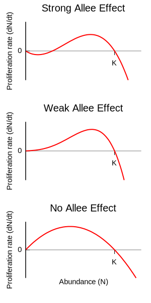

种群群落
预计阅读时间: 200 分钟生态学概述
生态学
生态学是生态文明建设的科学支撑。生态学使人类认识了生态系统的结构、动态变化以及机制。只要尊重自然规律，在可允许的范围内操作，就可以既不损害自然，又能合理利用自然，促进自然和社会的协调。而生态文明建设会为生态学及相关学科提供发展的机会和平台，有利于推动科学的发展。
生物的生存与它周围的环境有着密切的关系。生物与环境是相互影响、相互作用的。例如，生物的尸体经过微生物的分解，成为二氧化碳、水等物质，这些物质又被绿色植物吸收利用，而绿色植物制造的有机物又被动物所摄取。正是由于自然界的植物、动物、微生物之间有着密切的相互关系，从而保证了自然界中氧气、二氧化碳、水等物质的循环，为生物的生存创造了必要条件。
生态学是研究生物与环境之间相互关系的科学。面对日益严重的全球环境问题，为了人类的生存与发展，维持生物与环境之间的平衡，生态学越来越受到人们的重视。生态学是从宏观和微观两个方面来研究生命现象的。传统的生态学主要从宏观的方面探索生态系统的奥秘，着重研究个体、种群、群落、生态系统四个层次。随着科学技术的不断进步，生态学除了继续研究宏观方面外，正朝着微观方面迅速发展。例如，作为新兴学科的分子生态学，主要是用分子标志、核酸指纹图谱等方法研究生物进化、遗传和物种多样性、生物对环境变化的相应对策、转基因生物的环境释放等问题。
生态学的研究方法主要包括野外观察、实验研究和理论研究三大类。从生态学研究发展历史来看，野外观察是最基本的研究方法。要了解动物的种群数量变动，首先要在自然环境中观察和收集资料。随着科学技术的发展，野外观察也可利用无人机在开阔地区调查动物种群密度等。利用电子仪器和遥测技术对动、植物种群进行取样和测量，用以确定动、植物种群数量的变动，就是采用了实验研究的方法。利用数学模型进行模拟研究是理论研究最常用的方法，这种方法已在种群增长和种间竞争等研究方面取得了丰硕成果。尤其是电子计算机在生态学领域中的应用，不仅解决了生态系统中各变量之间关系分析的困难，而且还直接促进了生态系统的建模和系统生态学的发展。
人类活动导致全球环境问题日益突出。目前，人类面临着全球气候变暖、臭氧层耗损与破坏、生物多样性减少、酸雨蔓延、土地荒漠化、森林锐减、大气污染、水污染、海洋污染、危险性废物越境转移等十大环境问题。这些环境问题不仅影响生物的多样性，破坏了生态平衡，也严重危害人类的生活与健康。自然界是人类社会产生、存在和发展的基础和前提，人类可以通过社会实践活动有目的地利用自然、改造自然。对于自然界，我们不能只讲索取不讲投入，只讲利用不讲保护。
-
利用人工合成的性引诱剂诱杀某种害虫的雄性个体，改变了害虫种群正常的性别比例，就会使很多雌性个体不能完成交配，从而使该种害虫的种群密度明显降低。
-
在濒危动物的保护方面，只有通过调查获知种群密度、出生率和死亡率、性别比例、年龄结构等特征，以及影响该种群数量变化的因素，才能准确了解该种群的生存状态，预测该种群的数量变化趋势，进而采取合理的保护对策。
-
在渔业上，人们总是希望每年既能捕捞较多的鱼，又不危及来年的鱼产量，也就是希望长期获得较高的捕捞量。那么，怎样确定合适的捕捞量呢？这就需要研究捕捞量与种群数量变化之间的关系。从理论上说，"S"形增长的种群在种群数量达到 值时，出生率与死亡率相等，这时即使不捕捞，种群数量也不会增加。研究表明，中等强度的捕捞有利于持续获得较大的鱼产量，捕捞后使鱼的种群数量处在 左右。
-
在有害生物的防治方面，种群研究同样具有重要意义。例如，在鼠害发生时，既适当采用化学和物理的方法控制现存害鼠的种群数量，又通过减少其获得食物的机会等方法降低其环境容纳量，才能使鼠害得到有效防治。再如，对农林害虫的防治，如果一味依赖喷洒农药的方法，既造成环境污染，又伤及害虫的天敌；有效保护或引入天敌生物，则有利于将害虫数量控制在较低的水平。
种群研究的应用：研究种群的特征和数量变化的规律，在野生生物资源的合理利用和保护、有害生物的防治等方面都有重要意义。
系统结构
"生物与环境"模块仅选取了生物学相关方面的最基本的知识。例如，我们会学习有关种群的特征和影响种群特征的生态因子的内容、群落的结构和类型以及群落演替的内容、生态系统的结构和类型以及生态系统自我调节作用的内容等。这将有助于我们形成"生态系统中的各种成分相互影响，共同实现系统的物质循环、能量流动和信息传递，生态系统通过自我调节保持相对稳定的状态"这一大概念。
系统是指彼此间相互作用、相互依赖的组分有规律地结合而形成的整体。在自然界，生物个体都不是单独存在的，而是与其他同种和不同种的个体以及无机环境相互依赖、相互影响的。
-
在一定的空间范围内，同种生物的所有个体形成一个整体------种群，
-
不同种群相互作用形成更大的整体------群落，
-
群落与无机环境相互作用形成更大的整体------生态系统，
-
地球上所有的生态系统相互关联构成更大的整体------生物圈。
可见，自然界从生物个体到生物圈，可以看作各个层次的生命系统。
自然界是一个统一的整体，自然科学中的物理学、化学、生物学等学科的思想方法、基本原理、研究内容有着密切的联系。生物学与数学及人文社会学科等也相互渗透、共同发展。在"生物与环境"模块的学习过程中，许多概念的学习与其他学科有横向联系。例如，联系物理学"能量守恒定律"，我们可以更好地理解生态系统中能量流动以及能量流动过程的特点等内容；联系物理学"散热方式"的知识，可以更好地理解仙人掌和野骆驼能适应荒漠和干旱少雨的环境等知识。再如，联系数学的相关知识，我们可以轻松地构建"种群数量变化的数学模型"，理解"物种丰富度"的知识，掌握"生物富集"的原理等。而理解这些概念将有助于我们形成"结构与功能观" "稳态与平衡观" "物质与能量观"等生命观念。
酵母菌计数
酵母菌是单细胞真核生物，进行出芽生殖和有性生殖，属于兼性厌氧型生物，生长周期短，增殖速度快，可以用含糖的液体培养基来培养，通过细胞计数可以测定封闭容器内的酵母菌种群随时间而发生的数量变化。其中，养分、氧气、温度和代谢废物等是影响种群数量持续增长的限制因素。
-
操作提示
-
溶液要进行定量稀释，每天取样的时间要固定。
-
从试管中吸出培养液进行计数前，需将试管轻轻振荡几次，目的是使培养液中的酵母菌均匀分布，减小误差。
-
制片时，先将盖玻片放在血细胞计数板的计数室上，用吸管吸取培养液，滴于盖玻片边缘，让培养液自行渗入。多余的培养液用滤纸吸去。
-
制好装片后，应稍待片刻，待酵母菌全部沉降到计数室底部，再用显微镜进行观察、计数。
-
-
计数提示
-
计数原则：显微镜计数时，对于压在小方格界线上的酵母菌，应遵循"计相邻两边及其夹角"的原则计数。
-
统计结果偏小的原因：取液时未摇匀，吸取的培养液中酵母菌偏少；在计数时，未统计边缘的酵母菌等。
-
统计结果偏大的原因：取液时未摇匀，吸取了表层的培养液；在计数时统计了四周边缘的酵母菌等。
-
-
注意事项
-
测定的酵母菌种群数量是在恒定容积的培养基中测定的，与自然界中的种群数量变化有差异。
-
在进行酵母菌计数时，由于酵母菌是单细胞生物，因此必须在显微镜下计数，且不能准确计数，只能估算。
-
血细胞计数板必须保持干燥，否则培养液将不能渗入计数室。
-
清洗血细胞计数板的正确方法是浸泡和冲洗，不能用试管刷或抹布擦洗。冲洗干净后不能用纱布或吸水纸擦干，应自然晾干或烘干或用吹风机吹干。
-
血细胞计数板：在显微镜下直接计数是一种常用的细胞计数法（抽样检测法），一般用于单细胞微生物数量的测定，由于血球计数板上的计数室盖上盖玻片后的容积是一定的，所以可根据在显微镜下观察到的细胞数目来计算单位体积的细胞的总数目。

-
每块计数板由 H 形凹槽分为 个同样的计数区。
-
每个计数区分为 个大方格。
对一支试管中的培养液中的酵母菌逐个计数是非常困难的，可以采用抽样检测的方法：先将盖玻片放在血细胞计数板的计数室上，用吸管吸取培养液，滴于盖玻片边缘，让培养液自行渗入。多余的培养液用滤纸吸去。稍待片刻，待酵母菌全部沉降到计数室底部，将计数板放在载物台的中央，计数一个小方格内的酵母菌数量，再以此为根据，估算试管中的酵母菌总数。


趋势分析：
-
增长：在开始时培养液的营养充足，空间充裕，条件适宜，因此酵母菌大量繁殖，出生率高于死亡率，种群数量剧增。
-
稳定和波动：随着酵母菌数量的不断增多，营养消耗、pH 变化、有害产物积累等，酵母菌死亡率逐渐升高，当死亡率等于出生率时，种群数量不再增长。
-
衰退：随生存条件进一步恶化（营养物质消耗殆尽，有害代谢产物积累，pH 改变），酵母菌死亡率高于出生率，种群数量下降。
关键性因子
美国生态学家谢尔福德提出了耐受性定律。他认为，任何生物的种群数量都会随着关键性因子的变化而发生改变：

可看出，某种群数量随着某一关键性因子的变化而变化。在关键性因子最适区，生物最多；当关键性因子偏离最适区，生物不断减少；当关键性因子超过生物耐受范围时，生物将面临生存困难乃至死亡。任何生物的种群数量都会随着关键性因子的变化而发生有规律的变化。对于种群来说，除了某些关键性因子外，还会受到其他环境因子的影响。
对某个生物体而言，其周围客观存在的一切事物都是它的环境。环境中对生物的生长、发育、生殖、行为和分布等有直接或间接影响的因素，称为生态因子。生态因子包括非生物因素和生物因素。非生物因素包括阳光、温度和水等，生物因素包括生物之间的各种相互关系，如 捕食、竞争和共生。在任何生物的生存环境中都存在着很多生态因子，如果某种生态因子发生变化，在接近或超过生物体的耐受极限时，就会成为限制因子。
在某种生态因子的耐受范围内，每种生物都有一定的最适区。对某种生物而言，阳光、温度、水、土壤、空气、无机盐以及其他生物都可能对它们的生存有一定的影响。
-
水是生物不可缺少的重要组成成分，生物的生命活动离不开水。生物的一切代谢活动都是以水为介质的，不仅生物体内的营养物质运输和废物排出离不开水，各种生理过程和生物化学反应也都必须在水溶液中进行，所以生物的生命活动需要充足的水分供应。
广泛分布于各地草原上的结缕草地下茎比较发达，是较好的草坪用草。有科学家发现，它的种群密度受水的影响很大。当土壤水分充足时，结缕草的正常生长不受限制，株高增高、种群密度增大；当土壤水分不足时，结缕草地上部分生长受到抑制，种群密度减小。
同样，水对动物的生长发育、空间分布及种群数量也有影响。例如，在干旱年份，澳洲鹦鹉就停止繁殖；羚羊幼仔的出生时间，正好是雨水充沛、植被茂盛的时期。水影响生物的生长发育。就植物而言，当环境中的水分处于适当水平时，植物能维持自身水分平衡，代谢活动旺盛，生长发育快；当环境水分供应不足时，植物会萎蔫、停止生长；当环境水分过多时，一般陆生植物会出现根系缺氧、烂根。就动物而言，环境水分供应不足，可能导致一些动物因缺水而无法生存，还可能引起一些动物滞育或休眠。例如，在相对湿度为 的条件下，飞蝗由蝻发育成熟虫的时间最短，如果偏离此最适湿度，其发育时间就会延长。
-
阳光对生物和环境的影响十分复杂，其中光的波长、光照强度和日照长度等都是重要的生态因子。不同波长的光对生物有不同的影响。例如，大多数脊椎动物与人一样需要在可见光范围内生存。一些昆虫对红外光不敏感，但对紫外光敏感。昆虫对紫外光的这种趋光性已被用于诱杀农业害虫。
光照强度对植物生长及形态结构的构成有重要作用。根据植物对光照强度适应程度的不同，可以将植物分为阳生植物和阴生植物。阳生植物对光照强度要求比较高，只有在光照较强的条件下才能正常生长，常见种类有蒲公英、杨、桦和松等。阴生植物大多生活在光照强度较弱的环境中，常见种类有人参、文竹、三七和半夏等。还有些植物对不同的光照强度都有较强的适应能力。根据植物对光照强度的适应程度，可以更科学地对各种植物进行合理栽培，间作套种，引种驯化。

光照强度也会影响很多动物的行为。丹顶鹤白天觅食，夜间休息，其活动与光有着密切的关系。光可以影响很多动物的行为：有些动物在白天的强光下活动，如大多数鸟类，哺乳动物中的大部分灵长类、有蹄类，昆虫中的蝶类、蝇类等；有些动物则在夜晚或晨昏的弱光下活动，如夜猴、蝙蝠、家鼠和夜鹰等。光还影响着动物的繁殖，如水貂在白昼逐渐增长的春夏季繁殖，而绵羊、山羊等动物则在白昼逐渐缩短的秋冬季才进入繁殖期。除此之外，光周期还会影响许多动物的蛰伏、迁徙、换羽、换毛等周期性活动。
最新的研究显示，孔雀秋海棠叶肉细胞中叶绿体里的类囊体有着非常精妙的排列顺序，具有类似聚光晶体的作用，使得孔雀秋海棠叶片对阳光的利用率极高。因此，孔雀秋海棠的叶片可以比其他同样生长在林下带却没有类似结构的喜阴植物的叶片多吸收 的能量。也正是由于叶绿体中这种特殊结构的聚光效应，使得孔雀秋海棠的叶片发出迷人的蓝色辉光
-
根据植物开花对日照长短的不同需求，可以把植物分为长日照植物和短日照植物。长日照植物一般是指在一定时间内日照时间长于一定时数（如每日连续 以上的日照）才能开花的植物，如油菜。短日照植物则一般是指在日照时间短于一定时数（如每日连续 以上的黑暗）才能开花的植物，如水稻。短日照植物大多数原产自热带、亚热带地区，长日照植物大多数原产自温带和寒带地区。
生活在不同昼夜变化环境中的植物，经过长期的自然选择和进化，形成了适应日照长短变化的特性。如果把长日照植物栽培在热带地区，由于昼夜周期中日照长度短于某一临界值，植株就不易或不会开花。同样，将短日照植物栽培在温带和寒带地区，植株也会因日照时间过长而不易或不会开花。这对植物的引种、育种工作有一定的指导意义。
日照长短也会影响动物的繁殖。例如，在白昼逐渐缩短的秋冬之际，山羊进入生殖期；在白昼逐渐变长的春夏之际，鼬开始进入生殖期。除此之外，日照长短还会影响动物的迁徙。例如，许多鸟类每年春季都能按时迁飞到繁殖地，秋季又能按时迁飞到越冬地，这与日照时长的周期性变化也有关系。在日照时长周期性变化的长期作用下，各种生物都形成了自己特有的活动节律，它们的这种生理活动与环境条件的周期性变化保持同步的特性，也有利于生物的生存。
-
任何生物都生活在具有一定温度的环境中，并受温度变化的影响。地球表面的温度条件总是不断变化的，在空间上随纬度、海拔高度和各种小生态环境的变化而变化；在时间上会因四季的变化和昼夜的变化而变化。这些温度的变化都可能给生物带来多方面的深刻影响。长期生活在某种温度环境中的生物通过自然选择，在形态结构、生理生化等方面会表现出一定的适应特征。
由于季节温度的变化，丹顶鹤每年春季从越冬地迁徙到繁殖地，秋季从繁殖地迁徙到越冬地。温度除了影响动物迁徙外，还影响着生物的代谢。任何一种生物，其代谢过程都有酶的参与。每一种酶都有它发挥功能的最适温度，当环境温度偏离酶的最适温度时，植物和变温动物体内酶的活性就会下降，导致其代谢活动减缓，恒温动物的代谢也会发生改变以适应温度的变化。当环境温度偏离最适温度过多时，生物则无法存活。因此，生物只有在一定的温度范围内才能生存。
温度影响生物在地球上的分布。每一种生物都有固定的温度适应范围：有的能在较宽的温度范围内生存，如马尾松、白桦、蟾蜍等分布在全球大部分区域；有的只能在很窄的温度范围内生存，如橡胶、椰子、可可等主要分布在温度高的热带地区。
长期生活在高温环境中的生物与长期生活在低温环境中的生物表现出不同的适应环境的方式。即使生活在相同的环境中，不同生物适应环境的方式也不尽相同。例如，沙漠中的啮齿动物常采用夏眠、穴居和昼伏夜出的方式生活；一些植物密生茸毛和鳞片，可以过滤部分阳光；一些植物体呈白色或银白色，能反射部分阳光；还有一些植物通过降低细胞含水量来减缓代谢速率，从而适应高温环境。
局部异温性和逆流热交换：动物的体温因身体部位不同而有差异的现象称为局部异温性，这种现象常出现于生活在寒冷环境中的动物身上。外界温度越低，动物身体内部与其裸露的末梢部位的体温温差越大。哺乳类的四肢、尾、耳、眼、鼻，鸟类的足、翼、喙、眼等部位较之被有绒毛或羽毛和皮下脂肪的胸腹部的温度相差很多。这种状态的形成机制是：血管的特殊排列使动脉和静脉互相接触，末梢部分变冷的静脉血由热的动脉血温暖后，再流向心脏。这种机制称为逆流热交换。这样虽使身体末端的温度降低，但减少了身体热量的散失。
-
土壤是岩石圈表面能够生长植物的疏松表层，由固体（无机物和有机物）、液体（土壤水分）和气体（土壤空气）组成的三相复合系统。在自然条件下，土壤空气和土壤水分的比例经常变动，上述成分不是简单机械地混合在一起，而是相互联系、相互制约，构成了一个统一体。
土壤是陆生生物生活的基质，它提供生物生活所必需的无机盐和水分；同时，土壤又是生态系统中生物与无机环境相互作用的产物。由于植物根系和土壤之间具有极大的接触面，它们之间发生着频繁的物质交换，彼此能产生强烈的影响，因此土壤也是重要的生态因子。
植物对于长期生活的土壤会产生一定的适应性，并因此形成各种以土壤为主导因素的植物生态类型。例如，根据植物对土壤酸碱度的反应，可以把植物划分为酸性土植物、中性土植物和碱性土植物；根据植物对土壤含盐量的反应，可以把植物划分为盐生植物和非盐生植物。
土壤中和落叶下生存的各种动物统称为土壤动物。作为生态系统物质循环中重要的消费者和分解者，土壤动物在生态系统中起着重要的作用。土壤污染可以通过土壤动物种类的数量变化表现出来，如受铜、锌、汞重金属污染的土壤中螨类数量明显减少。
盐生植物是指生长在氯化钠含量较高的土壤上的植物，又称盐土植物。土壤中含有大量的可溶性钠盐对大多数植物是有害的，通常土壤中含有 的氯化钠时，许多植物就不能忍受了，但盐生植物可以生长在含盐量高达 的土壤中。盐生植物能在盐化生境中生长发育，并可积累相对多量的盐分。盐生植物包括真盐生植物（如海岸灯心草），它们能增加体内水分，使茎叶肉质化，在枝条积累相当多量的盐分，通过枝条的枯落，达到盐分平衡。还有泌盐生植物（如大米草），它们能将体内过剩的盐分经过叶上的盐腺、毛等分泌出去，以调节体内盐分。
盐生植物种类较少，据研究，我国的盐生植物共有 种。常见的有生长在海边盐土上的南方碱蓬，它是细小的肉质植物，耐盐性强，常群生于潮湿的海滩上或黏性的盐渍土上，植株常呈紫色或红紫色，所以，在海滩上这类植物特别显眼。红树、红茄冬、海漆树等也是生长在热带海岸边的盐生植物，它们的耐盐力也很强。
从水、阳光、温度和土壤等诸多生态因子对种群特征的影响可以看出，生物与环境是相互依存的统一体。而对于某一特定生物种群而言，在特定时期，某种生态因子会成为影响该种群的关键性因子。任何一种自然环境都包含着许多种非生物因素。影响丹顶鹤的非生物因素除了光、温度和水以外，还有土壤、空气等。每一种非生物因素对生物的作用都不是孤立的，而是相互影响、相互制约的。这些非生物因素彼此联系，对生物产生综合的影响。例如，植物的光合作用同时受到光照、二氧化碳、水、温度和无机盐等非生物因素的影响。
一般来说，食物和天敌等生物因素对种群数量的作用强度与该种群的密度是相关的。例如，同样是缺少食物，种群密度越高，该种群受食物短缺的影响就越大，因此，这些因素称为密度制约因素。而气温和干旱等气候因素以及地震、火灾等自然灾害，对种群的作用强度与该种群的密度无关，因此被称为非密度制约因素。例如，在遭遇寒流时，有些昆虫种群不论其种群密度高低，所有个体都会死亡。
循环因果关系：在生物学上，许多生理或生态过程的因果关系是循环性的，也就是说，一定的事件作为引起变化的原因，所导致的结果又会成为新的条件，施加于原来作为原因的事件，使之产生新的结果，如此循环往复。
生物适应环境
生物具有特定的形态结构适应环境：
-
海鬣蜥体表有鳞片，可以减少水分的散失，并通过盐腺排出血液中过量的盐分；较长的尾和钩状的爪，利于海鬣蜥在水中游泳以及在海底爬行取食海藻和其他水生植物；深灰色的体色利于海鬣蜥吸收太阳辐射产生的热量，从而维持体温。
-
动物可以通过不同的形态结构来保持水分平衡。例如，昆虫有几丁质的外骨骼，两栖动物体表分泌黏液，爬行动物具有很厚的角质层，哺乳动物有皮脂腺和被毛，这些结构都能减少动物体内水分的散失。在炎热、干旱沙漠中活动的骆驼具有盘旋而充满皱褶的鼻腔，可以将呼出气体中含有的水重新吸收，减少体内水分丢失。恒温动物在寒冷环境下，身体的突出部分如四肢、尾巴和耳郭等有变短变小的趋势，可减少散热。例如，温带赤狐的耳郭大于冻原地带北极狐的耳郭，而热带非洲大耳狐的耳郭又明显大于赤狐的耳郭。
-
生长在高温环境下，有些植物体表具有密绒毛或鳞片，有些植物体呈白色或银白色，叶片革质发亮，能反射一部分阳光。有些旱生植物通过发达的根系增加水分的摄取，且叶面积很小，可以减少水分散失。例如，仙人掌科的许多植物，叶片退化成刺状，松柏类植物叶片呈针状或鳞叶状。也有些旱生植物具有发达的贮水组织，能储存大量的水分，如景天科的瓦松等。
-
在水生植物群落中，作为对水环境的适应性进化性状，许多高等水生植物并不像陆生植物具备发达的机械组织，而是借助水的浮力支撑植株。它们的叶片相对于陆生植物而言更薄且相对面积更大，以此增加光合作用的效率，例如江南水乡常见的荷、莲、菱角等。然而在陆生植物群落中，植物通常具有发达的机械组织以支撑植株。因此，几乎所有的木本植物都是陆生的，少数如红树、水杉虽然生长在湿地中，但是它们高高挺立在空中的树冠说明只有依靠自身的机械支撑才能茁壮成长。
生物可以通过调节生理功能适应环境：生活在低温环境中的植物，其芽和叶片内常有油脂类物质利于保温，并可以通过减少细胞中的水分和增加细胞中的糖类、脂肪及色素等物质来降低植物的冰点，增强抗寒能力。大多数植物会在炎热的夏季通过增强蒸腾作用避免叶片过热受害。骆驼可以在外界非常炎热的条件下升高体表温度，减小身体和外界环境之间的温差，从而降低外界热量向体内大量传导带来的危害。
生物可以通过特定的行为适应环境：海鬣蜥在温度下降的夜晚会将身体蜷缩在一起，减少体内热量的散失。大多数的灵长类、有蹄类动物适应于在白天的强光下活动，而蝙蝠、家鼠和蛾类等则适应于在夜晚或晨昏的弱光下活动。适应于白天或夜晚活动的动物只有当光照强度上升或下降到一定水平时，才开始一天的活动，因此这些动物将随着日出日落时间的季节性变化而改变其活动的时间。有些动物能通过冬眠或迁徙躲避低温影响，还有一些动物会通过夏眠、穴居或昼伏夜出等行为避免高温带来的危害。植物茎的背地生长、植物根的向地生长、向日葵幼嫩花盘的向光生长，以及高温炎热的夏日正午植物会关闭气孔，这些现象表明植物对环境也具有一定的行为适应。
生物对环境的适应一般都表现为适应组合：根据植物对光适应的生态类型，可将其分为阳生植物、阴生植物和耐阴植物。阳生植物适合在光照较强的环境中生存，如松、柳和杨等；阴生植物多生长在潮湿背阴的地方，如酢浆草、绶草等；耐阴植物介于阴生植物和阳生植物之间，既能耐受较弱的光照，也能在较强的光照下正常生长，如胡桃、云杉和金鸡纳树等。阳生植物和阴生植物叶片的形态和生理功能差异很大，它们叶片的形状、颜色、气孔密度、蒸腾作用强度和光合作用强度等有明显的区别。通过突变和自然选择，生物形成了适应非生物环境的形态结构、生理功能和行为等方面的特征。沙漠动物骆驼不仅能通过提高体温适应炎热，还能通过取食带有露水的或者多汁的植物枝叶补充水分，通过浓缩尿液减少失水。同时，它还进化出了能适应缺水的特殊的红细胞结构以及能储存大量脂肪的驼峰。
每种生物生活在特定的环境中，时刻受到环境中各种生态因素的影响。生物的适应性是指生物在形态结构和生理特征方面与其赖以生存的环境条件相适合的现象。生物只有适应环境才能生存繁衍，生物对环境的适应具有普遍性。通常情况下，生物对环境的适应不限于单一的机制，达尔文说过："纵使生物在过去任何一个时期能够完全适应它们的生活条件，但当环境条件改变了的时候，除非它们自己跟着改变，否则就不能再完全适应了。"生物的适应性是长期自然选择的结果，但环境条件是不断变化的，生物对环境的适应是相对的。
生态指示种：生态指示种是指在一定地区范围内，能指示环境条件或其中某一因子的存在和特性的物种。植物经常被用作水和土壤等状况的指示生物，包括土壤指示植物、气候指示植物、矿物指示植物、环境污染指示植物、潜水指示植物等。
-
土壤指示植物：芒箕为酸性土壤的指示植物，柏木为石灰性土壤的指示植物，多种碱蓬是强盐渍化土壤的指示植物，葎草是富氮土壤的指 示植物。
-
气候指示植物：椰子树的开花是热带气候的标志。
-
矿物指示植物：海洲香薷是铜矿脉的指示植物。
-
环境污染指示植物：唐菖蒲的叶片边缘和尖端出现淡黄色片状伤斑，则说明空气中存在氟化氢污染。
此外，科学家发现，植物花的颜色、生态类群、年轮、畸形变异、化学成分等变化也具有指示某种环境条件的意义。
种群的数量特征
种群的密度
种群是指占有一定空间和时间的同一物种所有个体的集合体。种群的边界可以是自然的，也可以是由人为划定的。种群通常由不同性别和不同年龄的个体组成。种群是物种的具体存在单位、繁殖单位和进化单位，也是群落的基本组成单位。要了解群落乃至生态系统，必须首先学习种群的基本特征、增长方式及其数量波动的影响因素等内容。
一个种群不是个体的简单累加，而是具有一定的种群特征，是一个能够自我调节、动态变化和发展的有机整体。种群的最基本特征是种群数量特征。种群密度是指某个物种在单位面积或单位体积内的个体数量，是反映种群大小的最常用指标。种群密度的变化是研究种群动态的基础。种群密度的大小可作为人类判断生物有益或有害、保护或防治的依据，也可作为评价保护和防治效果的指标。
-
逐个计数法：在调查分布范围较小、个体较大的种群时，可以逐个计数，如调查某山坡上的珙桐密度。
-
黑光灯诱捕法：在多数情况下，逐个计数非常困难，需要采取估算的方法。例如，对于有趋光性的昆虫，可以用黑光灯（波长在 365nm 左右的紫外线）进行灯光诱捕来估算它们的种群密度。
-
估算种群密度常用的方法之一是样方法：在被调查种群的分布范围内，随机选取若干个样方，通过统计每个样方内的个体数，求得每个样方的种群密度，以所有样方种群密度的平均值作为该种群的种群密度估算值。调查草地上蒲公英的密度，农田中某种昆虫卵的密度，作物植株上蚜虫的密度、跳蝻的密度等，都可以采用样方法。

计数方法：样方内和相邻两边及其夹角，一般来说计上不计下，计左不计右。
样方大小要始终：草本植物一般为 平方米，灌木为 平方米，乔木为 平方米。
-
标记重捕法：许多动物的活动能力强，活动范围大，不宜用样方法来调查它们的种群密度。常用的方法之一是标记重捕法。这种方法是在被调查种群的活动范围内，捕获一部分个体，做上标记后再放回原来的环境，经过一段时间后进行重捕，根据重捕到的动物中标记个体数占总个体数的比例，来估算种群密度。
标记重捕法的基本假设是，即使一个种群内的生物在一定空间内分布可能不均匀，但是个体之间是随机的，即在某个地方放生一部分生物，在足够长的时间（假设没有出生死亡、迁入迁出）后，这些生物一定是随机散在整个庞大的种群之中。
据此，我们不妨记第一次捕获 个体，重捕到 个体，其中有 个体是标记过的，估算种群数量 。
因此得出种群数量的计算公式：
即捕捉到的数量相乘，除以重捕到的标记个体。如果要求种群密度，不要忘记除以面积。
- 被调查个体在调查期间没有大量迁入和迁出、出生和死亡的现象；
- 标志物和标志方法不能影响被标记对象的正常生命活动；
- 标记物不能过于醒目，否则易被捕食；
- 标记物不易脱落，能够维持一定的时间；
- 标志个体需与未标志个体混合均匀后再重捕，保证在重捕时被捕的概率相等；
误差分析：通常来说需要考虑 的变化，如果标记脱落，则 偏小， 偏大；如果个体不易二次捕捉，则 偏小， 偏大；如果标记个体死亡，则 偏小， 偏大；如果个体未完全融入种群，则 偏大， 偏小。
调查动物种群密度的常用方法，如样方法、标记重捕法，往往需要直接观察或捕捉个体。在调查生活在隐蔽、复杂环境中的动物，特别是猛禽和猛兽时，这些方法就不适用了。为此，科学家开发出一些不需要直接观察或捕捉，就能调查种群密度或种群数量的新方法。
-
在动物的栖息地布设若干台红外触发相机，恒温动物一靠近，就会触发相机自动拍摄照片或视频。经过一段时间，科学家利用计算机分析处理这些照片或视频，就能确定所调查动物的种群数量。运用这种方法，我国科学家持续对我国境内的东北虎、东北豹等濒危动物的数量进行监测。
-
不同动物的粪便具有不同的特征。先区分粪便来自哪种动物，再分析这种动物的粪便来自多少个个体，就可以获得种群的数量信息。例如，采集了大量大熊猫的粪便，通过分析其中的微卫星 DNA 分子标记，查明大熊猫的种群数量。
-
动物的声音也存在个体差异，成熟个体的声音特征往往可以长期保持稳定。因此，动物的声音可以作为一种非损伤、低干扰的标记，用于对不同个体进行识别，进而进行种群数量的监测。利用这种基于声音的个体识别技术，科学家成功地对鲸、长臂猿等哺乳动物以及鸮、秧鸡等鸟类开展了野外种群数量的监测。
组成种群的个体在其生活空间中的位置状态或布局，称为种群分布型，一般可分为集群分布、均匀分布和随机分布三种。集群分布是最常见的分布型，形成原因主要是资源分布不均，如草原上的斑马等动物的集群行为。均匀分布主要是种内竞争结果或人工种植行为所致，如农田中种植的水稻。随机分布比较少见，在环境资源分布较为均匀，种群内个体间没有彼此吸引或排斥的情况下，容易产生随机分布，如森林里的狼蛛。
种群数量特征
种群密度是由出生率、死亡率、迁入率和迁出率直接决定的。出生和迁入使种群密度增大，死亡和迁出使种群密度减小。
-
出生率一般用单位时间内出生个体数占种群总个体数的百分比或千分比表示。不同种类动物由于性成熟的时间、每次产仔（卵）数和每年生殖次数不同，因而出生率会存在差异，通常高等动物的出生率要低于低等动物。
-
与出生率相反的是死亡率，死亡率用单位时间内死亡个体数占种群总个体数的百分比或千分比表示。个体死亡对该种群来说未必不利，只有衰老的个体不断死去，新的个体不断产生，才能保持物种的延续和遗传的多样性，从而使种群不断适应变化着的环境。
-
生物个体的生理寿命是决定死亡率的内在因素，疾病、饥饿、寒冷、干旱、被捕食和意外死亡等是造成死亡率升高的外在因素。当种群密度过大时，其死亡率也会升高。
-
在种群中，有些个体会从外种群迁入本种群，也有些个体从本种群迁出。迁入率或迁出率用单位时间内迁入或迁出的个体数占种群总个体数的百分比或千分比表示。
年龄结构和性别比例影响种群数量的动态变化：
-
年龄结构是指各年龄组个体数量在种群中所占的比例关系，可用年龄金字塔来表示。生态学家通常把种群分成生殖前期（幼年期）、生殖期（成年期）和生殖后期（老年期）三个年龄组。生殖前期指尚无生殖能力的年龄阶段，生殖期指具有繁殖能力的年龄阶段，生殖后期指丧失了生殖能力的年龄阶段。有些昆虫生殖前期较长，生殖期极短，生殖后期等于零，如蜉蝣和蝉等。
年龄金字塔一般可分为增长型、稳定型和衰退型三种类型。图中宽度代表不同年龄组个体数在整个种群中所占的比例，中线把每一个年龄组分为左右两半，分别代表雄性和雌性个体数所占的比例。年龄结构能影响种群的出生率和死亡率等。

增长型表示种群中有大量处于生殖前期的个体，而处于生殖后期的个体数较少，出生率大于死亡率，种群数量趋向于增长。稳定型表示种群中处于生殖前期的个体与处于生殖后期的个体数大致相等，出生率与死亡率基本相等，种群数量较为稳定。衰退型表示种群中处于生殖前期的个体数少而处于生殖后期的个体数多，出生率小于死亡率，种群数量趋向于减少。因此，通过分析年龄结构可预测种群数量的变化趋势。
-
性别比例是指种群内两性个体数量的相对比例。具有生殖能力的雌雄个体数量比例的失调，将引起种群内个体数量的变化，在一定程度上也会影响种群密度的变化。
大多数高等动物的种群，其性别比例基本保持 ，人类也是如此。在一雌一雄婚配方式的种群中，生殖期性别比例越接近 ，出生率就越高，所以性别比例影响着种群的出生率。也有一些种群的性别比例并非 ，如蜜蜂雄性多于雌性，由于种群的主体是数量庞大的不可育雌性个体，繁殖任务则交给唯一的雌性蜂王或蚁王与数百只雄蜂或雄蚁去完成。因此从繁殖角度看，它们都是雄性多于雌性的。而种类繁多的蚜虫中，雌性是繁殖的主力，它们可以在没有雄性的参与下进行孤雌生殖。
在生产实践中，人们常采用干扰和破坏害虫自然性别比例的方法来降低害虫的数量。在人口统计上，男女性别比例一般以 名女婴所对应的男婴数目为结果，世界人口性别比例的正常值为 102 至 107。我国颁布禁止"非医学需要的胎儿性别鉴定"和"非医学需要的性别选择性人工流产"。
出生率和死亡率、迁入率和迁出率决定种群数量的动态变化。
一个物种种群数量的维持是一个动态的过程。简而言之，出生率和迁入率是表示种群数量增加的种群特征，而死亡率和迁出率是表示种群数量下降的种群特征。只有当这四种基本特征相互平衡时，该物种的种群数量才能达到稳定。其中出生率和死亡率、迁入率和迁出率是决定种群数量变化的主要因素，年龄结构、性别比例常作为预测种群数量变化的主要依据。种群数量的变化还受到种内关系、种间关系、外界环境等因素的影响。开展种群数量的调查，对于珍稀濒危生物的保育、有害生物的监测和控制，以及人口数量的监控等均具有重要的实践意义。
种群数学模型
建立数学模型是解释种群数量变化的重要方法：数学模型是用来描述现实系统或其性质的一个抽象简化的数学结构。建立数学模型是解释生物种群数量动态变化的重要方法。例如，在探究果蝇种群的增长活动中，通过观察和记录培养瓶中果蝇种群的数量变化，统计处理实验数据，以建立数学模型，并进一步通过数学模型来分析果蝇种群数量变化的特点及其原因。
以时间为横坐标，细菌数量为纵坐标，画出某种群的增长曲线。这样的曲线图是数学模型的另一种表现形式。同数学公式相比，它能更直观地反映出种群的增长趋势。所得出的公式和增长曲线，通常只是对理想条件下数量增长的推测。
种群的"J"形增长（指数增长）：
-
自然界有类似细菌在理想条件下种群增长的形式，如果以时间为横坐标，种群数量为纵坐标画出曲线来表示，曲线则大致呈"J"形。
-
对一支试管中的培养液中的酵母菌逐个计数是非常困难的，可以采用抽样检测的方法：先将盖玻片放在血细胞计数板的计数室上，用吸管吸取培养液，滴于盖玻片边缘，让培养液自行渗入。多余的培养液用滤纸吸去。稍待片刻，待酵母菌全部沉降到计数室底部，将计数板放在载物台的中央，计数一个小方格内的酵母菌数量，再以此为根据，估算试管中的酵母菌总数。
-
模型假设：在食物和空间条件充裕、气候适宜、没有天敌和其他竞争物种等条件下，种群的数量每年以一定的倍数增长，第二年的数量是第一年的 倍。
-
数学模型： 年后种群数量为 ，其中 为该种群的起始数量， 为时间， 表示 年后该种群的数量， 表示该种群数量是前一年种群数量的倍数。
种群的"S"形增长（逻辑斯谛增长）：
-
如果遇到资源、空间等方面的限制，种群经过一定时间的增长后，数量趋于稳定，增长曲线呈"S"形。这种类型的种群增长称为"S"形增长。
-
一定的环境条件所能维持的种群最大数量称为环境容纳量，又称 值。S 形曲线可分为三段：（1）加速阶段，个体适应栖息环境后，种群增长的速率逐渐加快，这时种群的增长接近 J 形增长。（2）减速阶段，这时种群增长的速率逐渐变慢，虽然种群的个体数量仍在增加，但增速放缓。（3）平衡阶段，此时种群的出生率与死亡率相等，种群增长的速率降为 0，达到动态平衡。
-
对于 曲线，理想情况下其满足逻辑斯谛方程：
其中 指的是在理想情况下，种群的瞬时增长率。这个式子指出，当 时，瞬时增长速率最大。


研究种群的增长方式具有十分重要的实际意义，能更好地利用和保护生物资源，防治有害生物。例如，根据逻辑斯谛增长曲线在转折期增长最快的特点，可预知草原上放牧量为多少时既能保护草原，又能获得最好的经济效益。对于濒危野生动物的保护，则可通过改善生存环境来增大环境容纳量以促进其增长。相反，对于有害生物的防治，则应通过限制环境因素来降低环境容纳量以抑制其增长。
在自然界，当一种生物迁入一个条件适宜的新分布地时，初始阶段一般会出现较快增长，但是，资源和空间总是有限的。当种群密度增大时，种内竞争就会加剧，这就会使种群的出生率降低，死亡率升高。当死亡率升高至与出生率相等时，种群的增长就会停止，有时会稳定在一定的水平。可见，种内竞争对种群数量起调节作用。
我们考虑种群数量的一些数学性质：
-
种群增长率：指单位数量的个体在单位时间内新增加的个体数，无单位。
种群增长率 本次总数 上次总数 上次总数。
-
种群增长速率：指单位时间内新增加的个体数 (即种群数量增长曲线的斜率)，有单位，如个/年。
种群增长速率 本次总数 上次总数 时间。
-
增长速率 增长率。增长率 。在一些老的题目中，这几个量可能会混淆，甚至不符合现在的一般认知，据题分析即可。
在自然界，有的种群能够在一段时期内维持数量的相对稳定。当种群长久处于不利条件下，如遭遇人类乱捕滥杀和栖息地破坏，种群数量会出现持续性的或急剧的下降。
环境阻力：生存斗争中被淘汰的个体量。

注意：一般认为 S 形曲线的开始部分并非 J 形曲线，因为 S 形曲线自始至终都有环境阻力，但是因为这种阻力在前一部分并不明显，所以曲线会比较相近。在实验室中，为了制取 J 形曲线，通常会采取更换培养液的方式，这个时候 J 形曲线并不是连续的指数函数，而是若干个从头开始的 S 形曲线连在了一起，此时说这种 S 形曲线的前一部分是 J 形曲线也是合理的。但是一定注意，两种曲线起点都不是 0，而是一开始引入环境中的数量。
种群数量波动
种群是一个动态系统，种群中的个体数量是随着时间而变化的，这就是种群的数量波动。任何一个特定环境中种群的生存资源总是有限的，周围的环境条件在不断发生着变化，从而引起种群出生率、死亡率、迁入率和迁出率的改变，使其种群个体数量不断发生变化。即使种群数量达到了环境容纳量，也是在 值上下波动。
种群数量波动包括周期性波动和非周期性波动。严格地说，任何波动只要在两个相邻波峰之间相隔的时间基本相等就可称之为周期性波动，反之为非周期性波动。不同种群数量变化的周期长短是不一样的。在一些无脊椎动物中，周期性波动的周期往往是几天，甚至几小时，这主要与其生活史较短有关。

周期性波动主要表现为季节性波动和年间波动。季节性波动主要由环境的周期性季节变化所决定，种群数量随季节变化而改变，年年如此。年间波动则是指种群数量的变动是以多年为一个周期的重复波动，这种波动的周期常常是几年，甚至更长。例如，种群数量的周期性年间波动主要发生在成分比较简单的高纬度环境中，如北方针叶林和苔原地带。大多数种群的年间数量动态变化表现为非周期性波动。
北美地区雪兔和猞猁这两种动物都极其明显地表现出每隔 年出现一次数量高峰，波动原因主要涉及植物、雪兔、猞猁三者之间的数量互动关系。
图 1-17 东亚飞蝗种群的数量波动
在某些不利因素的影响下，有些种群会急剧衰退，甚至灭绝。通常个体较大、出生率低、生长缓慢、成熟较晚的物种，其种群数量受环境影响后，容易发生较大波动。
外源性因素调节种群数量波动：外源性因素是指影响种群密度的外部因素，主要包括气候、食物、捕食、疾病、寄生等。
-
气候因素会影响种群密度的变化。昆虫的早期死亡 是由气候变化引起的，因为气候因素会影响昆虫的发育与存活。
-
食物是调节种群数量的重要因素。在食物不足时，种群内部必然会发生激烈的竞争，使很多个体不能生殖或不能存活。
-
捕食也能将被捕食者的种群密度制约在一定水平。捕食者种群数量会随着被捕食者数量的增加而增加，也会因自身受到天敌的捕食而减少。生产上常利用这种关系进行生物防治。
-
病原体和寄生生物的致病力和传播速率是随着种群密度的增加而增加的。例如，禽流感易发生在候鸟聚集区，禽流感病毒的大量增殖和快速蔓延会导致候鸟大量死亡，这对候鸟的种群密度起着重要的调节作用。
内源性因素调节种群数量波动：内源性因素包括领域行为和内分泌等种群内部的影响因素。
-
领域行为是指动物有选择地占据、保卫一定的空间，不允许同类其他个体进入这一空间的行为。
-
内分泌因素也会对种群数量起到一定的调节作用。当种群数量上升时，种群内个体经受的社群压力增加，会增强对中枢神经系统的刺激，进而引发内分泌失调，使种群数量增长停止或被抑制，继而又降低了社群压力。
在大多数情况下，上述这些因素并不是单独起调节作用，而是多种因素综合在一起共同影响种群数量波动。
种群概念拓展
存活曲线：依照物种的个体从幼体到老年所能存活的比率，所做出的统计曲线，可以反映种群在每个年龄级生存的数目。

-
Type I：这类生物大部分的死亡，是发生在这类生物最大生命期的阶段。换句话说，就是这些生物在幼儿时期较不容易死亡，成年后的种内竞争则较为激烈。譬如人类或是具有完善育幼行为的生物都属于此类。
-
Type II：这类生物的死亡率无论在何种年纪，都维持一定的比率。可能具有一定照顾子代的行为，但仍不及 Type I 完善，如海鸥、水螅、松鼠等。
-
Type III：这类生物在幼年时期的死亡率会很高，但是如果其年龄或是体型达到某一阶段或是程度，其死亡率就会下降许多，成年后的种内竞争则较不明显。许多会产下许多后代、生殖策略是以量取胜的生物，像是大部分的鱼类、昆虫都是此类。
生活史理论是在演化生物学与生态学中的一项核心理论框架，旨在探讨生物体在其生命周期各阶段所表现出的资源分配策略，以及不同策略差异的成因与结果。
在生活史理论中，生物体的生活史特征可归纳为七项核心指标：出生时的体型、生长模式、达到性成熟的年龄与体型、后代的数量、体型与性别比例、特定年龄与体型下的繁殖投入、特定年龄与体型下的死亡率分布、整体寿命。为适应所处的生态环境，不同生物演化出各具特征的生活史策略。在这一过程中，个体在资源有限的条件下，不同性状之间往往存在演化权衡。例如，生物体可能在演化上倾向于追求较大的体型或更长的寿命，或相反地，优先繁殖更多后代，提升种群增长速度，亦或是增强单个后代的生存概率。
我们在前面已经提到过逻辑斯谛方程：
在繁殖策略方面，生活史理论常将生物划分为 r 策略与 K 策略：
-
K 策略强调种群稳定与个体质量；物种后代数量较少，却在每个个体上投入更多养育资源，从而提高其存活概率；种群数量受非密度制约因素主导，恢复快但波动大。
- 生境相对稳定；
- 个体大、发育慢、寿命长；
- 繁殖较晚并多次繁殖；
- 后代数目少，个体大、存活率高；
- 较低繁殖能量分配和较长的世代周期。
-
r 策略强调快速繁殖与种群扩张；通常一次产生大量后代，但个体存活率较低；种群数量受密度制约因素主导，恢复慢但稳定性高。
- 不断占领暂时性生境，迁移是种群动态过程重要组成部分；
- 适应于不可预测的多变环境；
- 发育快速、成年个体小、早熟、寿命短；
- 具有高生育力、后代数目多但个体小、缺乏亲体保护；
- 较高的繁殖能量分配和较短的世代周期。
总的来说 r 对策生物的个体较小，繁殖能力较强，但寿命较短，对环境有较强的适应能力，一般缺乏保护后代机制，竞争力弱，但具有很强的扩散能力，种群易爆发，比如老鼠。r 对策者和 K 对策者是两个不同的进化类型，但两种之间还有各种过渡类型，为 r-K 连续谱。就大类群来说，可以认为脊椎动物是 K 选择的、昆虫是 r 选择的。
阿利效应（Allee）：当种群密度过低时，种群的增长率反而会下降，甚至导致灭绝。这与传统观点（密度越高增长越快）相反，低密度时，个体搜寻配偶、合作捕食、共同防御捕食者等行为变得困难，繁殖成功率降低，最终影响种群生存。该效应在物种保护和入侵物种研究中非常重要，为确定最小可行种群规模提供了依据。
种群的延续需要有一定的个体数量为基础。当一个种群的数量过少，种群可能会由于近亲繁殖等而衰退、消亡。我们记这个临界点为 ，那么可用三次增长模型给出一个简单的阿利效应的数学表达：
群聚有利于种群的增长和存活，但过分稀疏和过分拥挤都可阻止生长，并对生殖发生负作用，每种生物都有自己的最适密度。对于一个具有阿利效应的种群来说，当种群密度低于某一阈值时，物种将会灭绝。这是因为种群密度过于稀疏时，种群个体将因难以找到配偶或因近亲繁殖等因素导致出生率减小，死亡率增加。因此许多种群，尤其那些濒危的密度稀疏种群，更容易受到阿利效应的影响。
动态、静态生命表：
- 动态生命表是通过追踪同一时期出生的生物群体（同生群）从出生到死亡全过程编制的生命表，记录各年龄阶段的存活与死亡数据，适用于短寿命物种。
- 静态生命表是通过调查某一特定时间点种群的年龄结构数据编制的生命表，反映种群瞬时生存状态，适用于世代重叠的长寿命物种。
- 主要区别：动态表采用纵向追踪法，静态表采用横向调查法；动态表适用于世代不重叠物种，静态表适用于世代重叠物种；动态表反映真实死亡率变化，静态表依赖种群稳定性假设。
我们定义集合种群为由空间上互相隔离，但功能上又有联系的若干地方种群通过扩散和定居而组成的种群，而局域种群为分布在相互隔离的斑块上的小种群。
局域种群的数量可能由于出生、死亡、迁入、迁出等原因变动很大，也可能灭绝。集合种群是在一个生境斑块中，局域种群构成的一个集合。即生境斑块中的局域种群在空间上存在隔离，彼此间通过个体扩散、相互迁移而彼此联系。尽管各局域种群数量变动很快，甚至灭亡，但从集合种群整体上来看，种群数量可能比较稳定，因为来自其他局域种群的新个体可能会迁入灭亡种群所占据的斑块。
集合种群是保护生物学所关注的热点。在生物多样性保护工作中，需要科学地考察所研究地区的空间范围、种间和种内差异，有较多以前是连续分布的物种，由于生境的破碎化而以集合种群的方式存在，物种的灭绝也往往经历了集合种群的阶段。集合种群理论揭示了人类活动所造成的物种灭绝，事实上是从局部灭绝开始的，局部灭绝的后果可能导致物种的最后灭绝。
群落及其演替
群落的性质
群落是指在一定时间内聚集在一定空间内的所有生物种群的集合体。组成群落的生物种群不是随意组合的，而是不同种群的生物在长期适应环境和彼此相互适应的过程中形成的动态结构。随着时间的推移，环境的变化，一个群落可被另一个群落所替代，并且在环境条件相似的区域可以重复出现相同的群落类型。
不同的群落往往由不同的种群构成，通过物种丰富度调查可以反映群落中物种数目的多寡。物种组成是区别不同群落的重要特征，也是决定群落性质最重要的因素。不同群落的物种组成不同，物种的数目也有差别。物种丰富度是指群落中不同物种的总数。研究群落中物种丰富度的最简单方法是识别组成群落的各种生物，并统计物种的数量。不同群落物种丰富度往往有差别。
如何测定一个生物群落的物种丰富度呢？常用的方法主要有记名计算法、目测估计法和样方法。
-
记名计算法：在研究分布范围较小而生物个体较大的生物群落的物种丰富度时，常采用记名计算法，即在一定面积的样地中，直接记录物种的名称和数量。

-
目测估计法：对一块植物个体数量较多而植物体型较小的样地进行物种丰富度研究时，常采用目测估计法，即按预先确定的多度等级来估计单位面积（体积）中的种群数量。多度等级一般用"很多""多""较多""较少""少"和"很少"来表示。
-
样方法：前面学到的测定种群密度的样方法也是测定物种丰富度的重要方法。当然，在采用样方法测定物种丰富度时，重点测定的是物种种类的数量，即单位空间中的物种数，而不是某物种的个体数量。
在一定空间内，群落物种多样性的高低取决于两个方面，一是群落中物种数的多少，二是各物种在个体数量上分配的均匀程度，即物种的丰富度和均匀度。群落中物种的丰富度和均匀度越高，物种多样性就越高，反之则越低。辛普森指数就是一种常用的测定群落中物种多样性的指标。
辛普森指数的计算公式，式中 表示物种多样性指数； 表示物种的数目（种数）； 表示第 个物种的个体数； 表示群落中所有物种的个体总数。
优势种决定群落的结构和内部环境的形成：
-
对群落的结构和内部环境的形成有明显决定作用的物种称为优势种。不同的群落往往有不同的优势种。优势种往往具有高度的生态适应性，并且在环境条件相对稳定的群落中，这种竞争优势常常是持久不变的。
-
群落中的关键种：群落中有一些物种数量不多，但当它们消失或削弱时，却能引起整个群落发生根本性变化，这样的物种称为关键种。实验研究中常采用移除的方法来鉴别群落中的关键种。
与优势种比较，优势种更多强调的是个数相对更多，也就是优势种非常适宜这种生境，他们在这种生境是占优势的。而关键种则强调的是其对生境的作用非常大，例如顶级捕食者其实是个体数相当少的，如果去除关键种，则会对生态系统造成非常严重的危害。
但是，因为优势种数量通常非常大，生活力强的物种，这也导致它通常也能凭借自己的数量和生活力对群落的结构和内部环境起到一定决定性作用，并在很大程度上影响其他物种的生存和生长，因此对优势种和关键种的保护是很关键的。
-
群落中的物种组成不是固定不变的。随着时间和环境的变化，原来不占优势的物种可能逐渐变得有优势；原来占优势的物种也可能逐渐失去优势，甚至从群落中消失。例如，当放牧强度加大时，羊草就会明显减少，糙隐子草等植物便逐渐占优势，一些原来在群落中罕见的植物种类也变得常见了。如果过度放牧，碱蓬等植物就会明显占优势，群落中原有的一些植物种类会消失，草原生产力严重降低。
物种在群落中占据一定的生态位：
-
一个物种在群落中的地位和作用，包括所处的空间位置，占用资源的情况，以及与其他物种的关系等，称为这个物种的生态位。生态位概念最早由美国生态学家约瑟夫·格林内尔在 1917 年提出，后经查尔斯·埃尔顿和乔治·哈钦森等学者的完善和发展，已成为生态学中的重要理论。
-
生态位是指群落中某个物种在时间和空间上的位置及其与其他相关物种之间的功能关系，它表示物种在群落中所处的地位、作用和重要性。一个物种的生态位不仅取决于它所栖息的场所，而且取决于它与食物、天敌和其他生物的关系，包括它吃什么和被什么动物所吃，以及与其他物种之间的关系等。
-
群落中不同的物种往往占据不同的生态位。同一群落中，两个物种的生态位不可能是完全重叠的。当两个物种的生态位重叠时会发生竞争，且生态位重叠越多，竞争就越激烈，以致竞争优势较大的物种有可能把另一物种完全排除掉，这就是竞争排斥原理。

-
自然群落中，生态位有重叠的物种会发生生态位分化。当两个物种的生态位有重叠时，往往通过自然选择作用使各自的生态位发生变化，从而减少或排除竞争，使得它们共同生存下来，这种现象称为生态位分化。动物在生态位上的分化方式主要有改变食物的种类，形成不同食性；划分分布区域和活动范围；错开活动时间等。
例如，某群落中有甲、乙两个物种，甲物种主要以 为食，乙物种主要以 为食，这两个物种又共同以 为食。甲、乙物种间为了共同食物 发生生态位重叠而进行竞争，结果使两者的一部分个体被淘汰。长期的自然选择，使得甲、乙两个物种会向着吃不同食物的方向发展，即生态位不断分化，从而降低两个物种的竞争强度而达到共存。生态位分化是生物对环境的长期适应以及自然选择的结果。

-
在群落中，不同的物种各自生活在一定的空间范围内，利用特定的资源，甚至只在特殊的时间段出现（如某种食虫蝙蝠只在夜间活动），它们在群落中所起的作用以及与其他物种的关系也有差别。生态位宽度，也叫生态位广度，是指一个物种所能利用的各种资源的总和，反映了物种对环境资源的利用范围和适应能力。简单来说，一个物种的生态位宽度越宽，说明它能利用的资源类型越多、生存环境的适应范围越广；反之，生态位宽度越窄，物种对资源和环境的特化程度越高，对特定条件的依赖性越强。
-
任何一个种群在生物群落或生态系统中都会占据一定的生态位。在一个群落中，往往有一些种群在数量、长势上占有一定的优势，而成为群落中的优势物种。群落中生态位相似的种群之间常存在竞争关系。竞争的结果，可能是其中一个种群趋于灭绝，也可能是通过生态位发生分化而减少或排除了相互竞争，使不同种群共存下来。生态位的分化提高了生物利用环境资源的能力。
-
研究某种动物的生态位，通常要研究它的栖息地、食物、天敌以及与其他物种的关系等；研究某种植物的生态位，通常要研究它在研究区域内的出现频率、种群密度、植株高度等特征，以及它与其他物种的关系等。
群落中每种生物都占据着相对稳定的生态位，这有利于不同生物充分利用环境资源，是群落中物种之间及生物与环境间协同进化的结果。哈钦森提出的 -维生态位概念认为，生物在环境中的生存受到多种因子的限制，这些因子构成了一个多维空间，生物只能在其中某个特定的范围内生存。
生态位理论在城市规划和景观设计中的应用越来越广泛。美国"城市野化"运动倡导者大卫·霍尔提出，在城市设计中应充分考虑野生动物的生态位需求，为城市中的鸟类、昆虫等生物创造生存空间。新加坡"花园城市"建设也充分运用了生态位原理，通过分层绿化、立体种植等方式，在有限的空间内创造出多样化的生态环境。
群落的结构
生物体都有其特定的结构，并与其功能相联系，群落也一样。群落在自然选择和适应的过程中形成了一定的结构。不同类型的群落具有不同的群落结构，在群落演替的过程中，群落结构会发生相应的变化。
垂直结构：在垂直方向上，大多数群落都具有明显的分层现象。
-
群落的垂直结构主要指群落的分层现象。陆地群落中，温带落叶阔叶林群落的垂直结构最为明显，从树冠到地面可以分为树冠层、下木层、灌木层、草本层和地表层。陆地群落的分层主要与植物对光的利用有关，其中树冠层对群落影响最大，如果树冠层比较稀疏，就会有更多的阳光照射到森林群落的下层，因此灌木层和草本层就会发育得更好。不同群落其垂直结构的复杂程度不同，热带雨林群落的垂直结构最为复杂，其下木层和灌木层还可再分为 个层次。寒温带针叶林群落的结构比较简单，下木层和灌木层一般都只有一个。草原群落的结构就更为简单了。
-
成层结构是物种自然选择的结果，它不仅缓解了植物之间争夺阳光、空间、水分和矿质营养的矛盾，而且植物在空间上的成层排列，扩大了植物利用环境的范围，提高了植物的光能利用率。不同植物适于在不同的光照强度下生长。这种分层现象显著提高了群落利用阳光等环境资源的能力。除了光照，在陆生群落中，决定植物地上分层的环境因素还有温度等条件；决定植物地下分层的环境因素则是水分、无机盐等。群落中植物的垂直分层为动物创造了多种多样的栖息空间和食物条件，因此，动物也有分层现象。
-
植物群落的层片结构：瑞典植物学家加姆斯提出，植物群落的层片划分为三级。一级层片，即同种个体的组合；二级层片，即同一生活型的不同植物的组合；三级层片，即不同生活型的各种类植物的组合。同一生活型的植物在形态结构、形成条件上是相似的，甚至某些生理过程也具有相似性。层片结构是在群落产生和发展过程中逐步形成的，是植物群落结构的一种基本单位。
在生态学中层片与层的概念是不完全相同的，但层片有时和层是一致的。在混交林中，乔木层是一个层，但它由阔叶树种层片和针叶树种层片两个层片构成。在实践中，层片的划分比层的划分更为重要，但层的划分往往是区分和分析层片的第一步。植物群落分层和形成层片结构，能更有效地利用环境资源，减弱种间竞争强度。所以，多层或层片的群落生产力也较单层或层片的群落生产力大。生物学家对层与层片结构研究的成果，对我们构建人工生态系统或人工群落时有效利用环境资源有积极意义。
-
在湖泊中有挺水层（如芦苇、莲、香蒲）、浮水层（如凤眼蓝、浮萍）和沉水层（如水车前、小眼子菜、竹叶眼子菜、黑藻）等。这些植物分别利用了湖泊中的不同空间，形成了湖泊群落的垂直结构。青鱼、草鱼、鳙鱼和鲢鱼是我国传统的四大家鱼，四大家鱼的混养就是利用了它们在池塘中占据着不同的生态位：青鱼栖息在水体的中下层，以水底的螺、蚌及水生昆虫等为食；草鱼栖息于水体的中下层或水草多的地方，主要以水草为食；鳙鱼又叫胖头鱼，生活在水体的中上层，主要以浮游动物为食，也食用部分浮游植物；鲢鱼主要以浮游植物为食，生活在水体的上层。
水平结构：群落中的生物在水平方向上的配置状况形成了群落的水平结构。
-
除人工群落外，陆地群落的水平结构在多数情况下呈现不均匀的片状分布，形成植物群落水平结构的镶嵌特征。在自然环境中，植物个体因受到光照的强弱、地形的差异、湿度的不同和动物的活动等影响，在水平方向上分布不均匀，使群落在外形上表现为斑块相间。每一个斑块可以看作是一个小群落，形成群落的镶嵌特性。
-
群落的结构特征不仅表现在垂直方向上，也表现在水平方向上。由于地形的变化、土壤湿度和盐碱度的差异、光照强度的不同、生物自身生长特点的不同，以及人与动物的影响等因素，不同地段往往分布着不同的种群，同一地段上种群密度也有差别，它们常呈镶嵌分布。
-
导致群落具有水平结构的原因主要有三个方面：一是不同生物繁殖体的扩散能力有差异，例如依靠风、水和动物传播种子的植物可能分布范围较大，而种子较重或进行无性繁殖的植物往往集中分布在母株周围；二是生物种间相互作用的影响，例如植食性动物明显地依赖于它所取食的植物而分布；三是群落内部环境的不同，例如群落水平方向上光照、风、土壤湿度和盐渍化程度有差异。
时间结构：群落的组成和外貌可随时间改变而发生有规律的变化。
-
在某一时期，某些物种在群落中相对重要，而在另一时期，则是另一些物种在该群落中相对重要，从而形成了群落的时间结构。
-
群落的季节性：由于阳光、温度和水分等随季节而变化，群落的外貌和结构也会随之发生有规律的变化。
-
在温带、寒温带地区，群落的季节性变化非常明显，草原和森林群落的外貌在春、夏、秋、冬有很大差异。
-
有些种类的植物在早春来临时开始萌发，并迅速开花和结实，到了夏季其生活周期结束；
另一些种类的植物则在夏季达到生命活动的高峰，从而导致群落在春季和夏季的物种组成和空间结构发生改变。
大多数典型的草原鸟类和高鼻羚羊等有蹄类动物，在冬季都向南方迁移，到雪被较少、食物充足的地区生活。
旱獭、仓鼠等啮齿类动物在冬季会冬眠，有些动物则在炎热的夏季进入夏眠。
-
在不同的生物群落中，生物适应环境的方式不尽相同。换句话说，每一种生物都有自己适宜的生存环境。因此，群落是一定时空条件下不同物种的天然群聚。
群落交错区：
-
群落交错区又称为生态交错区，是两个或多个群落之间的过渡区域。
-
例如，森林和草原群落之间有森林草原地带，两个不同森林群落之间或两个不同草原群落之间都存在交错区。群落的边缘有的是持久的，有的在不断变化。群落交错区的特征是由相邻群落之间相互作用的空间、时间及强度所决定的。群落交错区的环境条件比较复杂，因而在交错区常常存在着两个重叠群落中的一些物种和交错区所特有的物种。群落交错区物种的数目以及一些物种的密度要比相邻群落大。
-
群落交错区有的宽，有的窄；有的是逐渐过渡的，有的是突然变化的。群落交错区有的相对持久，也有的不断变化。在群落交错区内出现物种数目和种群密度增大的现象称为边缘效应。群落交错区往往包含两个重叠群落的一些物种以及交错区本身所特有的物种，这是因为群落交错区的环境条件比较复杂，能为更多的动物提供食物、营巢和隐藏的条件。
-
边缘效应在人类生产中有着广泛的应用。目前，人类活动正在大范围地改变着自然环境，如城市的发展、厂矿的建设、土地的开发。这些活动都使原有景观的界面发生变化，形成许多交错区。充分关注这些新的交错区在控制不同系统之间物质、能量与信息的流通方面的作用，将对环境保护和可持续发展产生重要影响。
非生物环境的异质性：
-
地形因素：地形的起伏、坡度、海拔等会影响光照、温度、水分和土壤条件。例如，山地不同海拔高度的群落组成和结构差异明显，低海拔处可能以阔叶林为主，高海拔处则可能为针叶林或草甸。
-
土壤条件：土壤的质地、肥力、酸碱度、含水量等在空间上存在差异。肥沃的土壤可能支持更多种类的植物生长，而贫瘠的土壤则可能只有少数耐贫瘠的物种生存。
-
水分分布：水分是影响群落分布的关键因素。在湿润地区，群落可能以水生或湿生植物为主；而在干旱地区，耐旱植物占主导，且植物分布往往呈斑块状。
生物因素的异质性：
-
种群分布格局：不同物种的种群在空间上可能呈集群分布、随机分布或均匀分布。例如，一些植物的种子可能落在母株附近形成集群，而另一些植物的种子可能通过风、动物等传播方式分散到较远的地方。
-
物种相互作用：物种之间的竞争、共生、捕食等相互作用会影响它们的空间分布。例如，竞争能力强的物种可能占据优势地位，排挤其他物种；而共生关系的物种则可能在空间上相互关联。
-
垂直结构与水平结构：群落的垂直结构（如分层现象）和水平结构（如镶嵌性、斑块性）也是空间异质性的表现。垂直结构使不同层次的生物利用不同的资源，水平结构则导致群落在水平方向上形成不同的斑块或区域。
群落空间异质性对生态系统的功能和稳定性具有重要意义。较高的空间异质性通常能提供更多的小生境，支持更多的物种共存，增强生态系统的抵抗力和恢复力。
很多因素会影响生物群落的结构。以陆地群落为例，其中的植物分层主要受到阳光的影响，与光合作用有关；而动物分层现象主要与群落的不同层次可提供不同的食物和特定的栖息环境等有关。因此，不同种群之间的竞争和捕食等关系在群落结构形成中具有重要作用。
种间关系
种间关系一个群落中的物种不论多少，都不是随机的简单集合，而是通过复杂的种间关系，形成一个有机的整体。生态学上把不同物种的生物种群之间的关系称为种间关系。种间关系可以概括为两大类，即种间的正相互作用与负相互作用。
种间的负相互作用（苏教版）：
-
种间竞争：生活在同一区域的两种或两种以上生物争夺同一资源而产生的直接或间接抑制对方的关系。竞争的资源可能是食物、水分、无机盐，也可能是阳光、空间等。
竞争对种群的生存有重要影响。竞争有可能使两个不同种群达到协调的平衡状态，而激烈的种间竞争也有可能使竞争中处于劣势的一方消亡。例如，高斯在实验中发现，在两种草履虫之间的食物竞争中，双小核草履虫处于优势地位，其生长和增殖快，数量逐渐增加；而大草履虫生长和增殖慢，其数量逐渐减少，直到消失。

-
捕食：一种生物取食另一种生物的种间关系。捕食者种群和被捕食者种群之间相互制约，调节着捕食者和被捕食者的种群数量。
当捕食者的种群数量增大时，被捕食者的种群数量将随之减少；而被捕食者的种群数量降到一定水平时，反过来又会影响捕食者的种群数量。随着捕食者的种群数量减小，被捕食者的种群数量又会再次增大。如此下去，捕食者与被捕食者的种群数量之间呈现一定程度上的周期性波动现象。

在自然环境中，捕食者与被捕食者之间一般不存在单纯一对一的捕食关系，多种捕食者和多种被捕食者交叉着发生联系的现象非常普遍。捕食者一般是多食性的，可以选择多种不同的被捕食者，这样既能具有阻止单一被捕食者种群数量急剧下降的作用，又能给自身带来更多的生存机会。相反，就某种被捕食者而言，它会遭到多种捕食者捕食，而当它的种群密度上升较高时，可能会引来更多种类的捕食者，以影响其数量的继续增加。广义的捕食还包括动物取食植物，某种捕食者和某种被捕食者之间的关系是很复杂的。
-
寄生：一种生物（寄生物）寄居于另一种生物（宿主）的体内或体表，从而摄取宿主养分以维持生活的现象。寄生物与宿主既可能是植物、动物，也可能是微生物。
生物界中的寄生现象十分普遍。例如，噬菌体寄生在细菌体内，真菌寄生在植物体内，绦虫寄生在动物体内。寄生物的形态结构和生理功能等方面都会有适应宿主环境的特征。寄生物和宿主之间种群数量的动态变化在某种程度上与捕食者和被捕食者的相互作用很相似。随着宿主种群密度的增大，寄生物广泛扩散和传播；当宿主大量死亡导致种群密度减小时，寄生物也会随之减少。
此外，还有一类介于寄生和捕食之间的种间关系------拟寄生。拟寄生指寄生生物侵入寄主体内吸收营养并最终导致寄主死亡的生态现象，区别于普通寄生的核心特征为寄主必然死亡。例如，寄生昆虫把卵产在其他昆虫（宿主）体内，待卵孵化后幼虫以宿主的组织为食，直至宿主死亡。
种间的正相互作用（苏教版）：
-
互利共生：两个生物种群生活在一起，相互依赖、相互得益的关系。
互利共生现象在动物界也普遍存在。例如，豆科植物与根瘤菌的互利共生，豆科植物向根瘤菌提供生活所需的物质和能量，而根瘤菌能固定空气中游离的氮，改善豆科植物的氮素营养。再例如，鹿、牛、羊等植食性动物的胃中生活着多种种群密度很大的细菌，它们有的能分解动物所不能消化的纤维素，有的能合成一些动物生命活动需要的维生素。同时，这些动物也为细菌提供了营养和适宜的环境。因此每一个细菌种群都与相应的植食性动物相互依存，共同生活。
人体肠道内也生活着种类繁多、数量巨大的菌群，在一般情况下，它们能阻止和抑制外来肠道致病菌的入侵，并为人体提供多种维生素等营养物质。同时，人体肠道也为肠道微生物提供了良好的营养和栖息场所。所以，当人们长期服用广谱抗生素时，就会使肠道中正常的菌群失调，可能会导致某些维生素缺乏等症状。竹子中纤维素含量很高，而大熊猫每天要吃大量竹子，但一般只能利用其中一小部分纤维素。研究表明，与人类类似，大熊猫的基因组缺少编码纤维素酶的基因，但是肠道中有多种纤维素分解菌。
互利共生还表现为一方从另一方获得食物或隐蔽场所，同时回报给对方安全的生存环境，使其免遭捕食者或寄生物的攻击等。例如，在一些海洋生态系统中，专门有一些鱼和虾以其他鱼类体表和鳃上的寄生物为食，而被清洁的鱼类则免除了寄生物的干扰。这种通常被称为清洁共生的关系在热带海域中比较常见。
-
偏利共生：与种群间互利共生关系不同，自然界还存在一种非互利的共生关系，即偏利共生关系。偏利共生是指共生的两种生物的相互作用对其中一方有利，并对另一方无害的关系。
某些攀缘植物以高大树木作为附着物，借以得到适宜的阳光和其他生活条件，但并不从附着的植物上吸取营养。一般情况下，这些攀缘植物不会对被附着植物造成伤害。
海绵是一类生活在淡水或海水中的多细胞动物，其身体中央有一中空的腔，主要营固着生活。海绵体壁布满小孔，通过水的进出，既可摄取水中的营养物质和氧，也可排泄废物。深海里一种俪虾在幼小的时候就通过海绵身体上的水孔进入海绵的中央腔内生活，这种俪虾长大后就"囚禁"在海绵体内，并以海绵的食物残渣为食。俪虾获得海绵的保护和食物，但对海绵无害。
藤壶是甲壳纲动物，常附着在岩石等硬物上生活。藤壶有时也附着在鲸的体表。鲸是水生哺乳动物，它和附着在其体表上的藤壶形成典型的偏利共生关系。随着鲸的游动，藤壶会把壳盖打开，伸出羽状触手滤食水流中的浮游生物。鲸的游动为藤壶的摄食提供了更为广阔的空间，而鲸既没有从中得益，也没有因此受到危害。
种间关系主要有原始合作（互惠）、互利共生、种间竞争、捕食和寄生等（人教版）：
-
原始合作：两种生物共同生活在一起时，双方都受益，但分开后，各自也能独立生活。
互利共生：两种生物长期共同生活在一起，相互依存，彼此有利。
注意：原始合作、互利共生、偏利共生等通常难以区分，高中阶段一般要求记住课本上的案例即可。
-
捕食：一种生物以另一种生物为食的现象。
寄生：一种生物从另一种生物（宿主）的体液、组织或已消化的物质中获取营养并通常对宿主产生危害的现象。
种间竞争：两种或更多种生物共同利用同样的有限资源和空间而产生的相互排斥的现象。
生物防治：依据生物种群间的相互关系，用一种生物抑制或消灭另外一种生物（或另一类生物）的方法。
-
由于化学农药的长期使用，一些害虫已经产生了很强的抗药性。许多害虫的天敌又大量被杀灭，致使一些害虫十分猖獗。同时，施用化学农药会严重污染水体、大气和土壤，并通过一定途径进入人体而危害人体健康。利用生物防治病虫害，能有效地避免上述问题。目前，生物防治已经在世界许多国家得到广泛应用，其方法主要包括以鸟治虫、以虫治虫和以菌治虫。
-
利用捕食性天敌防治农林有害动物是一类常用的生物防治方法。例如，利用山雀、灰喜鹊、啄木鸟等捕食害虫，利用黄鼬、猫头鹰、蛇等捕食鼠类，利用瓢虫、螳螂、蚂蚁等昆虫捕食害虫。利用寄生性天敌防治农林害虫也是一类有效的生物防治方法。例如，利用赤眼蜂防治多种农林害虫。生物防治的方法很多。例如，用白僵菌制剂可以防治马尾松毛虫，利用苏云金杆菌制剂可以防治多种林业害虫，利用肿腿蜂可以防治天牛，利用花角蚜小蜂可以防治松突圆蚧。
从理论上讲，生物的种间关系复杂多样，但最主要的有九种相互关系类型（下表）。在生态系统的发育和进化中，正相互关系趋向于促进作用，从而提高两个物种的存活率；而负相互关系趋向于抑制作用，从而限制双方或一方的存活。

种群间的这些相互关系类型在普通的生物群落中都可能见到，对于两个具体的物种而言，相互关系的类型可能会在不同的条件下有所变化，也可能在其生命史的不同阶段中有不同的类型。例如，两个物种在某一时间段可能是寄生作用，在另一个时间段则成为偏利作用，到后来还可能变成中性作用。生物种间相互关系的多样化是生物进化的结果，也是生物与环境相互作用的结果。
群落的类型
地球各地因气候、地形和其他环境条件的不同而分布着不同类型的群落。群落包括水域群落和陆地群落两大类。
群落分布的规律性：森林、草原、荒漠这些自然群落在陆地上的分布是有规律的，比如我国东部湿润地区往往随处可见森林，在内陆半干旱区分布有大片的草原；再到西部干旱区则出现荒漠群落。不同群落在物种组成、群落外貌和结构上都有着不同的特点，不同群落中的生物也都有适应其环境的特征。
森林生物群落：
-
森林群落的分布与经度、纬度及海拔密切相关，通常分布在湿润或较湿润的地区，群落结构非常复杂且相对稳定。北半球自南向北依次分布着热带雨林、温带落叶阔叶林和北方针叶林等森林群落。森林群落是地球上最重要的陆地群落。
-
森林中有乔木、灌木、草本和藤本植物，还有种类繁多的动物。森林为动物提供了丰富的食物和栖息场所。因此，树栖和攀缘生活的动物种类特别多，如长臂猿、松鼠、蜂猴、犀鸟、避役和树蛙等。森林中阳生植物多居上层，能吸收比较强的阳光。林下光线相对较弱，在热带雨林中，林下几乎都是散射光，仅有稀疏的光点和光斑。所以，三七、人参、黄连、半夏、贝母以及某些蕨类、苔藓等阴生植物生活在林下。阴生植物的茎细长，叶薄，细胞壁薄，机械组织不发达，但叶绿体颗粒大、呈深绿色，因此，这类植物适应在弱光条件下生存。
-
热带雨林群落：生物种类极为丰富，群落结构复杂。热带雨林群落分布在赤道及其两侧的湿润区域，约占地球上现存森林面积的一半。其分布区终年高温多雨，年平均温度约 ，年降雨量在 。热带雨林群落生物种类极为丰富，是地球上最丰富的"生物基因库"。组成热带雨林群落的高等植物达 种以上，且绝大部分是木本，藤本植物及附生植物也发达。乔木树干高大，常生有支柱根和板状根；叶多大型，常绿，革质坚硬。灌木层植物一般很少分枝；叶往往大而薄，气孔常开放，具泌水组织，有的叶还具滴水叶尖。
热带雨林群落中生活着大量动物，其中以树栖攀缘生活的种类占优势。代表动物有树懒、树袋鼠、松鼠等兽类，鹦鹉、蜂鸟等鸟类，树蛙、飞蛙等两栖类，避役、飞蜥等爬行类。树栖动物形成了许多适应特征，例如，树懒具有弯曲而锐利的钩爪；避役的趾互相愈合呈钳状；松鼠的掌上有发达的足垫；树蛙的趾端有吸盘状构造；树袋鼠则具有能缠绕的长尾等等。
热带雨林群落为人类提供了极为丰富的生物资源。例如，三叶橡胶和可可等是珍贵的经济植物。此外，超过四分之一的现代药物是从热带雨林植物中提炼的，所以热带雨林群落被称为"世界上最大的药房"。同时，植物的光合作用强，对大气中 和 平衡的维持具有重大意义。但是，目前热带雨林群落遭到了前所未有的破坏，造成大量水土流失，直接影响了全球环境，特别是人类的生存环境。因此，保护热带雨林群落已成为当今世界最紧迫的生态问题之一。
-
温带落叶阔叶林群落：具有明显的季相变化。其分布区四季分明，夏季炎热多雨，冬季寒冷干燥，年降雨量在 。优势植物有山毛榉、栎、栗、杨、柳等落叶乔木；灌木和阔叶草本植物发育良好，种类也很丰富；藤本植物不发达；附生植物多为苔藓和地衣。乔木的叶片一般无革质和茸毛，冬季完全落叶，春季萌发新叶，夏季形成郁闭林冠，秋季叶片枯黄。
温带落叶阔叶林群落中，地栖动物种类和数量比热带雨林群落多，但树栖动物仍占相当比例。代表动物有鼠、松鼠、鹿、狐、狼、野猪和黑熊等兽类；啄木鸟、杜鹃和黄鹂等鸟类；蝮蛇等爬行类；大蟾蜍和林蛙等两栖类。动物生活节律有明显季节变化，夏季较冬季种类多。有些动物随季节而换毛（或换羽），有些动物以冬眠越冬，有些鸟类以迁徙越冬，全年活动的动物则大都有储食习性。
-
北方针叶林群落：针叶植物占优势。北方针叶林群落分布在北半球高纬度地区，约覆盖整个地球表面的 ，仅次于热带雨林群落。其分布区年降雨量在 ，夏季温凉，冬季严寒，植物生长期较短。植物种类较少，优势种主要有红松、云杉和冷杉等；附生植物、藤本植物及灌木稀少。植物的叶呈针状，表面有增厚的角质膜和内陷的气孔，以减少蒸腾并有助于在夏季干旱期和冬季结冰期保持水分。
北方针叶林群落中，动物种类较少，代表动物有驼鹿、雪兔、黑熊、雷鸟、灰鼠、松鸡和榛鸡等。多数动物营定居生活，有的动物通过储食来过冬，有的动物通过冬眠来过冬，有的动物通过冬眠和储食相结合的方式来过冬。少数动物通过迁移来度过漫长的冬季和食物短缺的春季。针叶林群落作为木材资源，对人类极其重要，但由于长期砍伐，目前原始的针叶林群落分布区已非常稀少。
我国的东北地区，夏季短促，温热多雨；冬季漫长，寒冷干燥。那里分布着主要由云杉、冷杉和落叶松等裸子植物组成的广袤的针叶林群落。生活在该群落中的动物一般都具有耐寒性，且能适应林中生活。由于冬季酷寒，地表积雪深，许多动物也有一些特殊的适应特性。例如，雷鸟深色带斑的鸟羽在冬季会更换为白色，有利于隐匿自己；驯鹿的腿长，脚蹄宽大，每个趾瓣均能张开与地面接触，可避免在冰雪上活动时摔倒或陷入松软的雪中。
草原生物群落：
-
草原群落约占地球陆地表面积的 ，主要分布在半干旱地区、不同年份或季节雨量不均匀的地区（年降雨量在 的地区大多形成草原）。
-
草原上动植物的种类较少，群落结构相对简单，以草本植物（旱生多年生草本植物）占优势，几乎完全由禾本科植物、豆科植物和菊科植物组成。植物的叶面积缩小、叶片边缘内卷、气孔下陷等以适应干旱环境。草本植物的生长期很短，从春季到秋季便会完成一个世代。有的草原上有少量的灌木丛，乔木非常少见。草原上的植物往往叶片狭窄，表面有茸毛或蜡质层，能抵抗干旱。
-
与森林群落相比，草原群落中动物种类贫乏，草原上的动物大都有挖洞或快速奔跑的特点。兽类中以营洞穴和集群生活的啮齿类为主，如黄鼠、鼠兔等；也有能迅速奔跑的有蹄类，如野驴、黄羊、野牛等。鸟类大多为夏候鸟。两栖类和爬行类很贫乏，但昆虫种类和数量非常多。
-
稀树干草原上，生长着伞形树冠状乔木，动物以斑马、长颈鹿和狮子为主。人类的开发和过度放牧已严重破坏了草原群落，使草原土壤被侵蚀，甚至荒漠化。绝大多数原始的温带草原动物几乎由于狩猎、草地转化为农耕牧场而灭绝了。
荒漠生物群落：
-
荒漠群落主要分布在亚热带干旱区，约占地球陆地表面积的 ，荒漠里物种少，群落结构非常简单。极度干旱，降水稀少且分布不均匀，年降雨量不足 ，有些地区年降雨量还不到 ，甚至终年无雨，而水分蒸发量则是降雨量的 倍。有些地区尽管降雨量充足，但是土壤过于贫瘠且水分非常容易流失，土壤长期处于缺少养分、干燥状态，也属于荒漠。
-
荒漠群落植被极度稀疏，有的地段大面积裸露。植物主要是灌木和半灌木，如蒿属植物和藜属植物，往往具有发达的根系、小而厚的叶片；还有仙人掌科植物和百合科植物，往往具有肉质茎或肉质叶。植物只在有水时才发芽、开花和结果，如果不下雨植物就不生长。
荒漠环境中的植物大多耐旱耐盐。有些植物的叶面角质层厚，气孔下陷且密度小；有些植物叶面具有细密的绒毛，可减少蒸腾作用；有些植物叶面积很小，甚至呈细棒状；有些植物近乎无叶，以绿色的茎进行光合作用。荒漠往往有很长的无雨期。一些植物的叶和茎肥大而且能储水，一旦遇到降雨就大量吸收水分，以备干旱期利用。一些植物根系的深度、幅度比地上部分的高度、幅度大几倍至几十倍。还有一些植物具有两层根系，即在土壤表层中有一层根系，可以利用降雨时渗入土壤表层的水分；在稍深的土层里又有一层根系，可以在干旱期利用土壤深层保存下来的水分。
-
荒漠群落中的动物种类比较稀少，以小型啮齿类和爬行类占优势。例如，袋鼠、蜥蜴、蛇、蝎子等。也生活着骆驼和野驴等大型动物。荒漠 群落中的动物穴居和善跑的习性比草原群落中的更突出。大多数动物昼伏夜出，少数昼行性动物则善于逃避高温，能躲进洞穴或把身体埋进沙里。昆虫、爬行类、鸟类和啮齿类等有夏眠的习性。有些兽类汗腺不发育、大便干结、小便很少；多数爬行类以尿酸盐的形式排尿，使水分损失最小。荒漠中的动物多数耐旱（如鼠类、蚁类），也有冬季和夏季休眠或者贮存大量食物以备越冬的习性。
-
荒漠中的植物和动物都能适应荒漠中干旱少雨的环境，如仙人掌和野骆驼等，具有耐旱的特性。植物有仙人掌属植物、骆驼刺属植物等，动物主要是爬行类、啮齿目、鸟类和蝗虫等。它们以独特的生存方式适应缺乏水分的环境。仙人掌具有肥厚的肉质茎，叶呈针状，气孔在夜晚才开放。骆驼刺植株才几厘米高，但根可长达 。爬行动物蜥蜴和蛇的表皮外有角质鳞片，有助于减少水分蒸发；它们的蛋壳坚硬，能保护正在发育的胚胎；它们的体温是变化的，其调节体温的方式是每天早早起来到阳光充足的地方，让身体暖和起来，待天热时退到地下等阴凉处。某些爬行动物以固态尿酸盐的形式排泄含氮废物，而不是产生需要更多水才能溶解的尿素。
苔原生物群落：
-
苔原群落：主要分布在欧亚大陆北部和北美洲北部，形成一个大致连续的地带。其分布区气候严寒，年平均温度在 以下；年降 雨量较少。苔原一般冬季寒冷漫长，夏季凉爽短暂，风力强劲，地下常有永冻层。
-
苔原群落植物种类稀少，优势种有苔藓、地衣、灌木和少数种类的草本植物，如矮石楠、羊胡子草和极柳等。植被高度一般只有几厘米，植物多为矮生，甚至紧贴地面匍匐生长。植物通常是常绿、多年生的，生长季节短且生长缓慢，几乎完全依靠营养繁殖。
-
苔原群落中的动物种类贫乏。代表动物有驯鹿、旅鼠、猞猁和北极狐等兽类，还有雷鸟和雁等少量鸟类。昆虫种类少但数量较多，几乎没有爬行类和两栖类动物。多数动物体毛长且绒密，皮下脂肪厚。严冬季节，绝大多数鸟类迁往温暖的南方过冬，驯鹿迁往针叶林群落过冬。开阔的冻原环境使得动物缺少天然隐蔽条件，且土壤永冻层厚，难以挖掘土穴，所以留居种类如旅鼠、北极狐等不冬眠，也不储藏食物，而是积极活动觅食。
-
随着石油在苔原群落分布地区被发现，人类开始了对苔原群落的开发，已经导致永冻层逐渐融化，引起土壤下沉和侵蚀。如何保护苔原群落已成为世界各国的重要研究课题。
水域生物群落：
-
淡水生物群落：包括生活在湖泊、池塘、河流中的生物群落。淡水生物群落通常是互相隔离的，一般分为流水生物群落和静水生物群落两大类。流水生物群落又可分为急流和缓流两类。急流群落中水的含氧量高，水底没有污泥，栖息在那里的生物多附着在岩石表面或隐藏于石下，以防止被水冲走，通常有根植物难以生长。缓流群落的底层易缺氧，水底多污泥，游泳动物很多，底栖生物种类多生活于底层的基质中。静水生物群落分为若干带。沿岸带阳光能穿透到底，常有有根植物生长；湖沼带有阳光透入，能有效地进行光合作用，有丰富的浮游植物；深底带由于没有光线，自养生物不能生存，消费者的食物依赖于沿岸带和湖沼带下沉的食物颗粒。
-
湿地生物群落：湿地生物群落中的动植物物种十分丰富，既有水生生物也有陆生生物，常见的有芦苇、香蒲、黑藻、金鱼藻等植物，以及鱼类、两栖类、鸟类等动物。
-
海洋生物群落：在海洋中，数量众多的微小浮游植物，浅海区生长的大型藻类（如海带、裙带菜等），以及种类繁多的动物，它们共同构成海洋生物群落。
由此可见，某地的群落是什么类型，受水分、温度等因素的影响很大。生活在这一地区的物种能够形成群落，是因为它们都能适应所处的非生物环境。同时，群落中不同种群之间通过复杂的种间关系，相互依存、相互制约形成有机整体，从而维持种群之间的协调和平衡。
在不同的森林群落中，生物适应环境的方式不尽相同，换句话说，每一种生物都有自己适宜的生存环境，因此有人说，群落是一定时空条件下不同物种的天然群聚。
群落的演替
任何生命系统都不是静止不变的，群落也不例外。随着时间的推移和环境的改变，群落往往处于不断变化和发展之中，直至与当地环境处于平衡状态。随着时间的推移，一个群落被另一个群落代替的过程，叫作群落演替。
群落演替按照演替的起始条件不同划分为初生演替和次生演替两种类型。初生演替是指从完全没有植被，并且也没有任何植物繁殖体存在的裸地上开始的演替，裸岩和湖底开始的演替都是初生演替。次生演替是指在被毁灭群落基质上所进行的演替。在伐林地、火烧地、放牧地和弃耕地上所发生的演替都属于次生演替。一般地，原有群落毁灭后，会留下含有大量有机质的土壤、有生存力的孢子和种子等繁殖体。因此，与初生演替相比较，次生演替的土壤基质和环境条件比较好，次生演替经历的时间也相对比较短。
群落演替的终点是顶极群落：演替是一个漫长的过程，但不是一个永恒延续的过程。当一个群落演替到与当地的气候和土壤条件处于平衡状态的时候，演替就不再进行了。在这个平衡点上，群落结构最复杂也最稳定，只要没有外力干扰，它将永远保持原状。演替达到最终平衡状态时的群落称为顶极群落。地球上现存的群落大都处于顶极状态。顶极群落类型主要是由平均温度和年降雨量决定，在高温高湿的气候条件下，顶极群落是热带雨林；在低温高湿的气候条件下，顶极群落是北方针叶林；在中温中湿的条件下，顶极群落是温带草原；在低温低湿的条件下，顶极群落是苔原；在极端缺水的条件下，顶极群落是荒漠。
群落演替是生物与外界环境相互作用的结果。植物繁殖体的迁移和散布是群落演替的先决条件。植物繁殖体迁移和散布到一个新的环境，经发芽、生长和繁殖而定居。群落中植物的种类组成发生变化时，居住在其中的动物也通过迁入和迁出而做适当的调整，从而形成新的群落类型。气候、地貌、土壤和火等外界环境的改变常常可引起群落演替，而群落中植物种群特别是优势种的发育将导致群落内部环境条件的改变，这种改变往往不利于其自身的发展，而为其他植物的生存提供有利条件。随着群落物种之间的相互作用，通过竞争改变物种的生态位，甚至有的物种会被排挤到群落之外。人类的活动对群落演替的影响远远超过其他所有的自然因子。人类生产活动通常是有意识、有目的地进行的，人类既可以放火烧山、砍伐森林、开垦土地，也可以抚育森林、管理草原、治理沙漠，甚至还可以建立人工群落，将群落演替方向和速度置于人为控制之下。
群落内部因素的变化是群落演替的根本原因。例如，在很多情况下，某植物群落内一个优势种群的过度发展可能导致群落内光照、温度和土壤养分状况发生改变，原有种群的内部环境变得越来越不适合该种群自身的发展，而这又为其他种群的发生和发展创造了有利条件。种内关系和种间关系的动态变化也是群落演替的催化剂。例如，随着新物种的侵入、定居，种内斗争和种间竞争加剧，还会导致其他物种的侵入，物种的更替促进了群落的演替。
群落外部环境因素的不断变化也常常引发群落演替。火灾、涝灾、病虫害、严寒等外界因素作用于群落，会影响甚至改变群落演替的进程。当然，群落自身的演替也会对外界环境产生影响，导致外界环境出现变化。人类对群落演替的影响很大，因为人类的生产活动通常是有意识、有目的的，对群落外部环境因素和群落内部因素具有促进或抑制作用。人类可以使群落演替按照不同于自然的方向进行，甚至还可以建立人工群落。
干扰可使群落处于不断的变动状态，阻止群落走向平衡。干扰因子有自然的和人为的，例如，森林中的一棵树倒下后通常会对周围环境造成干扰，倒木能创造新生境，倒木根部留下的深坑灌满水后会成为蛙类、蝾螈和大量昆虫的产卵场所。上述小资料中对森林群落的计划火烧、对草原群落的适度放牧等，都是人类科学地对群落演替的控制。人为干扰对群落演替的影响较大，往往会使群落按照不同于自然发生的进程演替。群落演替体现了事物的客观规律：发展和变化。
裸岩演变到森林群落的过程是一些物种替代另一些物种、一个群落类型替代另一个群落类型的过程，这个过程直到一个稳定的群落出现才会终止。群落的这种一些物种替代另一些物种、一个群落替代另一个群落的自然演变过程称为群落演替。从裸岩到森林群落的演替过程中，土壤的形成与植物种类的变化是相互作用的：由岩石到岩石颗粒，最后发展为土壤；植物则从低等类群演替到高等类群。一般地，群落中的原有优势种在发展过程中，往往使群落内部环境变得越来越不适于自身的发展，而为其他种群的出现创造有利的条件。由此可见，群落演替是不同种群与环境变化相互作用而发生的优势种取代的过程，也是群落中各种群与无机环境相适应的过程。自然情况下，群落的演替是非常缓慢的，演替的意义在于可更充分地利用自然条件，尤其是利用一切可以利用的能量。
-
裸岩阶段。
-
地衣阶段：在贫瘠干燥的岩石表面，地衣往往会成为初生演替中的第一批物种，被称为先驱物种。地衣分泌的有机酸腐蚀坚硬的岩石表面（生物风化作用），再经过自然风化，坚硬的岩石表面逐渐变得松散，形成含有机物的岩石小颗粒。在这个阶段中，会逐渐有一些微小动物出现。
-
苔藓阶段：地衣对岩石的生物风化作用和自然风化作用为苔藓群落的出现创造了条件。苔藓的生长加强了对岩石表面的改造作用，使岩石小颗粒积累更多的有机物，加速土壤的形成，其中的微生物群落也随之增多。在这个阶段中，腐食性动物和植食性无脊椎动物会更多地出现。
-
草本植物阶段：随着群落演替继续向前发展，耐旱的植物种类开始侵入。禾本科、菊科、兰科等种子植物的生长对环境的改造作用很大，群落形成了更有利于草本植物生长的小气候和土壤条件。在这个阶段中，多种昆虫、一些小型哺乳动物（如啮齿类）开始进入群落并在此繁衍。
-
灌木阶段：草本群落发展到一定阶段，一些喜阳的灌木开始出现。一开始灌木与草本植物混生，接着灌木的种类和数量增加，取代部分草本植物，逐渐形成以灌木为优势物种的群落。灌木丛为鸟类等动物提供了丰富的食物资源和栖息场所。
-
乔木阶段：灌木群落发展到一定阶段，为乔木群落的形成提供了良好的环境。喜阳的乔木开始增多，灌木群落逐渐演变，最终形成与当地气候条件相适应的，以乔木为优势物种的群落。在这个阶段中，大型动物开始侵入、定居、繁殖，动物群落逐渐变得丰富起来。
在上述演替的过程中，土壤中的有机物越来越丰富，群落中物种丰富度逐渐加大，食物网越来越复杂，群落的结构也越来越复杂。地衣是真菌和藻类的共生体。藻类能进行光合作用，为真菌提供有机物；真菌的菌丝能吸收水分和无机盐，为藻类进行光合作用提供原料。地衣的这种特性使得地衣对环境有很强的适应能力，整个地球除了海洋之外，在沙漠、岩石以及树皮等处它都能生存。例如，裸岩表面无土壤、干燥、光照强、温度变化大，在这样恶劣的环境条件下，最先出现的生物是地衣。地衣能分泌一种有机酸腐蚀岩石表面，加之自然的风化作用，使坚硬的岩石表面慢慢地出现一些小颗粒。在地衣残体的作用下，这些细小颗粒含有了有机的成分。久而久之，在祼岩的表面便形成了非常微薄的土壤层，这为苔藓等植物创造了生存条件。故地衣被称为"植物界的开路先锋"。
与裸岩一样，湖泊也能演替成森林群落。从湖底的原生裸地到森林群落的演替一般需要经历五个演替阶段：
-
裸底阶段：在一般的淡水湖泊中，水深超过 时，湖底是原生裸地，湖泊中生活着浮萍等自由漂浮生物。这些动、植物残体以及雨水冲刷湖岸带来的矿物质微粒的沉降逐渐垫高了湖底。
-
沉水植物阶段：在水深 处，湖底原生裸地上最先出现的是轮藻属植物。轮藻属植物的残体使湖底有机质积累加快，导致垫高湖底的作用加快。当水深为 时，金鱼藻、黑藻等水生植物大量出现。这些植物生长繁殖能力更强，其残体垫高湖底的作用也就更强了。
-
浮叶根生植物阶段：随着湖底的日益变浅，莲、睡莲等浮叶根生植物开始出现。这些植物的残枝、败叶对进一步抬高湖底起很大作用，同时由于浮叶根生植物密集地漂浮在水面，使得水下光照很弱，不利于沉水植物的生长，沉水植物逐渐被浮叶根生植物所替代。
-
挺水植物和沼泽植物阶段：浮叶根生植物使湖底大大变浅，芦苇、香蒲和泽泻等挺水植物开始取代浮叶根生植物。此时，原来被水淹没的土地开始露出水面与大气接触。在富含有机质和水分的土壤上，莎草科和禾本科等喜湿生的沼泽植物开始生长。若此地带气候干旱，旱生草类将随着生境中水分的大量丧失而很快替代湿生草本植物。
-
森林群落阶段：灌木将在草本植物中出现，而后随着乔木的侵入，便逐渐形成了森林。
湖泊演替成森林群落的过程中，实际上就是湖泊被慢慢填平的过程。在弃耕的农田上，也会发生群落的演替。
-
农田被弃耕以后，很快就会长满一年生的杂草。在杂草的覆盖下，土壤条件会得到改善，一些多年生的杂草会"接踵而至"。
-
土壤表层的有机物逐渐增多，土壤的保水能力也逐渐增强，这将更有利于植物的生长。几年后，一些小灌木便会生长起来，并成为灌木丛。
-
再经过一段时间，乔木开始出现。高大的乔木占据了更多的空间，灌木逐渐减少，乔木逐渐蔚然成林。
-
在气候条件适宜的情况下，从弃耕的农田演替出树林，需要数十年时间。如果是在干旱的荒漠地区，群落的演替就很难形成树林，或许只能发展到草本植物阶段或稀疏的灌木阶段。
上述三个例子代表了演替的两种类型，这两种演替类型是根据起始条件划分的，除了演替起点的不同，初生演替与次生演替的区别还有：初生演替速度慢，趋向形成新群落，经历的阶段相对较多；次生演替速度快，趋向于恢复原来的群落，经历的阶段相对较少。这两类演替，都是从结构简单的群落发展为结构复杂的群落，群落中的物种数量和群落层次增多，土壤、光能得到更充分的利用。
影响群落演替的因素，有群落外界环境的变化，生物的迁入、迁出，群落内部种群相互关系的发展变化，以及人类的活动，等等。这些因素常常处于变化的过程中，适应变化的种群数量增长或得以维持，不适应的数量减少甚至被淘汰，因此，群落就不断地演替。无论裸岩上的群落演替，还是弃耕农田上的演替，最终都会达到一个与群落所处环境相适应的相对稳定的状态。在某一地区，群落演替的结果往往是由环境和群落内的生物共同作用而决定的，但人类活动对群落演替的影响有时超过其他因素的影响。
演替模型
康奈尔-斯莱特模型
这是解释"为什么演替会发生"最著名的三个模型。它们描述了先锋物种（早期物种）如何影响后继物种（晚期物种）。
促进模型（Facilitation Model）：
- 核心逻辑：早期物种通过改变环境（如改善土壤结构、增加有机质、固定氮素、调节微气候），使得环境更适合后期物种的生存，但往往不再适合早期物种自己生存。
- 典型场景：原生演替（如在裸岩、沙丘上的演替）。
- 例子：地衣和苔藓分解岩石形成土壤，为草本植物扎根创造条件；豆科植物固氮，改善土壤贫瘠状况，利于乔木生长。
- 结局：演替一直持续到现有的物种不再改变环境以利于其他物种入侵为止。
抑制模型（Inhibition Model）：
- 核心逻辑：早期物种占据了空间和资源，抑制了后来物种的定居。后来的物种无法生长，除非早期物种受到干扰（如火灾、风暴）或自然死亡腾出空间。
- 特点：谁先占据谁就是赢家。演替的发生极其依赖于机遇（谁的种子先到）和干扰事件。
- 例子：某些茂密的灌木丛遮挡了阳光，使得树苗无法在下面生长；或者某些植物分泌化感物质（Allelopathy）毒害其他植物。
耐受模型（Tolerance Model）：
- 核心逻辑：早期物种对后期物种既没有促进也没有抑制作用。后期物种之所以能取代早期物种，是因为它们更能忍受演替后期资源匮乏（如低光照、低养分）的环境。
- 机制：随着生物量增加，资源变少。早期物种通常生长快但竞争力差（需要高资源）；后期物种生长慢但能耐受低资源环境，最终耗死早期物种。
- 例子：在森林演替中，耐阴树种（如红松、云杉）能在阳性树种（如白桦）的树荫下生长，最终长得比白桦高并遮挡阳光，取代白桦。
顶极群落假说
演替最终会达到一个相对稳定的状态，称为顶极群落。关于这个终点由什么决定，有不同的观点。
单顶极假说 (Monoclimax Hypothesis) - F.E. Clements：
-
观点：在同一个气候区内，无论演替初期的土壤、地形如何，最终都只会形成一个由气候决定的顶极群落（气候顶极）。
-
比喻：群落像一个有机体，出生、成长，最终必然成熟。
-
局限：过于理想化，忽略了局部环境的长期限制。
多顶极假说 (Polyclimax Hypothesis) - A.G. Tansley：
-
观点：一个气候区内可以有多个顶极群落。除了气候，土壤（土壤顶极）、地形（地形顶极）、火烧（火顶极）等因素若长期稳定，也能决定群落的最终形态。
-
意义：承认了环境的复杂性和局部因子的决定作用。
顶极-格局假说 (Climax-Pattern Hypothesis) - R.H. Whittaker：
-
观点：最现代的观点。群落是沿着环境梯度连续变化的。并不存在截然不同的"气候顶极"或"土壤顶极"，而是一个由环境因子（温度、水分、养分等）决定的连续格局。
-
核心：群落的组成随环境梯度的变化而渐变，顶极群落是不可分割的连续体。
生态对策与资源竞争
这部分解释了物种特性的更替规律。
资源比率假说：
- 理论：植物主要竞争光照和土壤养分。
- 过程：
- 演替初期：光照充足，但土壤贫瘠。对养分竞争能力强的物种占优势。
- 演替后期：生物量积累，土壤肥沃但地面光照极少。对光照竞争能力强（耐阴、高大）的物种占优势。
- 结论：演替是群落沿着"光照-养分"梯度的移动过程。
CSR 对策模型：
- R对策 (Ruderals, 干扰耐受型)：生命周期短，种子多。出现在演替早期（高干扰）。
- C对策 (Competitors, 竞争型)：生长快，抢资源能力强。出现在演替中期（资源丰富，低干扰）。
- S对策 (Stress-tolerators, 胁迫耐受型)：生长慢，能忍受恶劣环境。出现在演替晚期或环境恶劣的顶极（资源耗尽或环境胁迫大）。
- 规律：演替通常遵循 R → C → S 的路径（视具体生境生产力而定）。
r-对策 与 K-对策：
- r-对策者（早期）：体型小、寿命短、繁殖快、扩散能力强、适应性广。
- K-对策者（晚期）：体型大、寿命长、繁殖少但成活率高、竞争能力强、生态位特化。
演替发育规律
尤金·奥德姆在1969年发表了经典的演替总结，归纳了群落从发育期到成熟期（顶极）的一系列变化规律。以下是核心重点：
群落能量学（Community Energetics）描述了能量如何在系统中流动、储存和消耗。
群落结构（Community Structure）描述了群落的物理形态和组成复杂性。
生活史（Life History）描述了物种的进化策略和生存方式。
养分循环（Nutrient Cycling）描述了物质在系统中的移动路径。
选择压力（Selection Pressure）描述了自然选择偏向哪种类型的生物。
总体内稳态（Overall Homeostasis）对生态系统整体稳定性的评价。
总结与核心启示：
-
演替的本质：奥德姆的这 24 条规律揭示了生态系统演替是从**追求"生产力"向追求"保护力"**转变的过程。
- 年轻的自然（早期）：致力于生长、获取资源，类似于"创业期"。
- 成熟的自然（晚期）：致力于循环、保持结构、对抗干扰，类似于"守业期"。
-
人类与自然的矛盾：
- 农业需要的是演替早期的特性（高 P/R 比率，高净产量，以此养活人类）。
- 自然保护追求的是演替晚期的特性（高稳定性，高多样性，保护环境）。
- 启示：人类经常通过耕作、除草、施肥，强行把生态系统"锁"在早期阶段。这虽然获得了粮食，但也导致系统脆弱、养分易流失、不仅需要投入大量化石能源，还丧失了自然调节能力。
3. 对生态修复的指导： 在修复受损生态系统时，不能指望一步登天达到成熟期特征（如直接种大树），而应遵循这些规律，先建立r对策物种（草本、灌木）改善环境，逐步引导系统向K对策和封闭循环转变。
现代生态学
现代生态学对演替的看法，已经从经典的（Clements 和 Odum 时代的）"线性的、决定论的、追求单一平衡点的"观点，发生了巨大的转变。现代视角更强调复杂性、随机性、非平衡态以及历史偶然性。这一视角的转变对于我们理解自然界以及进行生态修复（如退耕还林、草地恢复）具有颠覆性的指导意义。
从"平衡态"到"非平衡态" (Non-Equilibrium Paradigm)：
- 经典观点：认为自然界有"自我平衡"的能力。只要没有外界干扰，群落最终一定会演替到完美的、稳定的顶极群落（Climax）。干扰（如火灾）被视为破坏性的"意外"。
- 现代新视角：干扰是常态，平衡是暂时的。
- 大多数生态系统很少能真正达到所谓的"顶极状态"，因为由于气候波动、火灾、病虫害等频繁发生，演替往往在半途被打断，处于不断的调整和变化中。
- 结论：自然界不是一张静止的照片，而是一部永远演不完的电影。我们看到的群落往往处于"演替中途"的过渡状态，而非终点。
多稳态理论 (Alternative Stable States)：这是现代生态学中最重要、最具有实践意义的概念之一。
- 核心概念：一个生态系统在相同的环境条件下，可能存在两个或多个稳定的状态，而不仅仅是唯一的一个顶极。
- "球和杯"模型（Ball and Cup Model）：
- 想象一个球（生态系统）在一个凹凸不平的台面上滚动。凹陷处（杯子）代表稳定状态。
- 经典观点：只有一个深的大坑（顶极），球最终总会滚进去。
- 现代观点：台面上有好几个坑。如果干扰过大，球会从"森林坑"被踢出来，滚进"荒漠坑"。
- 迟滞效应 (Hysteresis)：
- 一旦系统进入了"退化态"（如草地变成了荒漠），由于系统内部建立了新的负反馈机制（如土壤结皮阻止种子萌发），即使消除了干扰（如停止放牧），系统也无法自动恢复原状。
- 意义：想要把球推回"森林坑"，需要比破坏时大得多的能量和投入。这解释了为什么很多生态修复工程仅仅靠"封山育林"是失败的，必须进行人工强力干预。
随机性与优先效应 (Stochasticity & Priority Effects)：
- 经典观点：演替是定向的。只要环境一样，A物种之后必然是B物种。
- 现代新视角：谁先来，谁可能就是赢家（历史偶然性）。
- 优先效应 (Priority Effect)：
- 演替的轨迹很大程度上取决于谁的种子先到达。
- 如果物种A先到了，它可能会改变土壤化学性质或占据空间，从而排斥物种B（即使物种B在理论上更适合这里）。
- 这种现象导致了演替结果的不可预测性。
- 中性理论 (Neutral Theory)：
- 由Hubbell提出，认为在很多情况下，物种之间的功能差异并不重要，重要的是扩散限制（能不能到）和人口统计随机性（生与死）。这挑战了"强者生存"的绝对生态位理论。
群落构建规则 (Community Assembly Rules)：现代生态学试图透过现象看本质，寻找支配物种如何"组装"在一起的底层规则，主要分为两个筛选过程：
- 环境筛选 (Environmental Filtering)：环境条件（温度、水分）筛选掉不能生存的物种。这通常导致共存的物种具有相似的性状（如干旱区植物都叶片小）。
- 生物竞争 (Biotic Interaction)：竞争排除原理筛选掉生态位太重叠的物种。这通常导致共存的物种具有差异大的性状。
新视角：现代研究侧重于分析这两个力量在演替不同阶段的相对强弱。例如，在演替早期（环境恶劣），环境筛选占主导；在演替晚期（环境舒适但拥挤），生物竞争占主导。
景观生态学视角：斑块动力学 (Patch Dynamics)：
- 经典观点：关注某一个点的垂直演替。
- 现代新视角：把森林看作一个马赛克（Mosaic）。
- 在宏观尺度上，生态系统是由无数个处于"不同演替阶段"的斑块组成的。
- 这里刚发生火灾（早期），旁边是成熟林（晚期），中间是灌木丛（中期）。
- 意义：这种空间上的异质性维持了物种多样性。如果整个森林都处于同一阶段（比如全是老树），一旦发生病虫害，可能全军覆没。这种"斑块化"被认为是生态系统韧性（Resilience）的来源。
正相互作用的回归 (Facilitation Revisited)：虽然经典的 Connell-Slatyer 模型中提到了"促进"，但在很长一段时间里，生态学过分强调"竞争"。
- 现代新视角：胁迫梯度假说 (Stress Gradient Hypothesis)。
- 在环境舒适的地方，物种间主要是竞争（互殴）。
- 在环境恶劣的地方（如盐碱地、高寒带），物种间主要是互利/促进（抱团取暖）。
- 保育应用：在修复恶劣环境时，现代做法不再是单纯种树（避免树木间竞争水分），而是利用"保育植物"（Nurse Plants，如灌木）来为树苗遮阴、固氮，利用物种间的正向关系。
**对现实的启示：**现代视角告诉我们，生态修复不是简单地"把树种下去，等它恢复原样"。我们需要评估系统是否卡在了错误的"稳态"里？是否需要引入特定的干扰（如控制性火烧）来维持健康？是否需要利用优先效应，人工抢先播种目标物种以抢占生态位？
胁迫梯度假说
**胁迫梯度假说（Stress Gradient Hypothesis，简称 SGH）**是现代群落生态学中解释物种间相互作用如何随环境变化而转变的最重要理论之一。该假说由 Bertness 和 Callaway 于 1994 年正式提出，它挑战了过去生态学过分强调"竞争"的传统，强调了"正相互作用（促进作用）"在恶劣环境中的核心地位。
核心观点：物种之间的相互作用（竞争 vs. 促进）不是固定不变的，而是随着环境胁迫程度的变化而发生动态转移：
- 在环境条件优越（低胁迫）的地方，物种间主要表现为负相互作用（竞争）。
- 在环境条件恶劣（高胁迫）的地方，物种间主要表现为正相互作用（促进/互利）。
简单来说：
- 富裕时：大家争权夺利（抢光、抢水、抢地盘）。
- 患难时：大家抱团取暖（互相遮阴、挡风、改良土壤）。
我们可以把环境想象成一个从"舒适"到"地狱"的连续梯度：
低胁迫环境（Benign Environment）：
- 场景：雨热充沛的热带雨林、肥沃的农田。
- 限制因子：由于资源丰富，生物量巨大，主要的限制因子是空间和光照。
- 交互作用：竞争 (Competition) 占主导。
- 生长快、高大的物种会遮挡矮小物种的阳光。
- 根系发达的物种会抢占土壤空间。
- 此时，邻居是"敌人"。
中度到高度胁迫环境（Harsh Environment）：
- 场景：干旱的荒漠、盐碱地、高寒冻原、风口。
- 限制因子：极端的物理环境（如高温、缺水、高盐度、低温）。
- 交互作用：促进 (Facilitation) 占主导。
- 一个个体能够改善微环境，使另一个体得以生存。
- 此时，邻居是"救星"或"保姆"。
在 SGH 中，那些能够改善环境、帮助其他物种生存的植物被称为保姆植物（Nurse Plants）。它们通过以下机制发挥作用：
- 物理防护（遮蔽效应）：
- 案例：在沙漠中，巨大的灌木（如灌木蒿）下通常长着很多草本植物。
- 机制：灌木提供了树荫，降低了地表温度，减少了水分蒸发，使得娇嫩的幼苗免受烈日暴晒致死。
- 水肥提升（资源岛效应）：
- 案例：豆科植物（如金合欢）在贫瘠土地上。
- 机制：豆科植物通过固氮作用增加土壤氮含量；或者通过"水力提升"（Hydraulic Lift），深根系将深层地下水带到表层土壤，夜间释放出来，供浅根系植物利用。
- 基质稳定与去毒：
- 案例：盐沼地中的灯心草（Juncus）。
- 机制：灯心草茂密的植株遮挡了阳光，减少了土壤表面水分蒸发，从而防止盐分在土壤表层结晶析出（如果蒸发太快，地表会变成盐壳，杀死所有植物）。这为其他不耐盐植物创造了低盐微环境。
- 防御植食动物：
- 案例：带刺的灌木。
- 机制：好吃的草本植物躲在带刺灌木丛中间，让食草动物（如羊、鹿）无从下口。
随着研究深入，生态学家发现 SGH 并不是简单的线性关系，主要有以下两点重要的修正：
驼峰模型（Hump-backed Model）：在极端恶劣的环境下，促进作用可能会崩溃。
- 逻辑：当环境恶劣到连"保姆植物"自己都自身难保时，它们就无法分出资源去帮助邻居，甚至会为了生存而加剧对仅存的一点点水分的竞争。
- 结论：促进作用通常在中高强度胁迫下最强，而在极度胁迫下可能减弱或转回竞争。
生活史阶段的重要性：相互作用的性质会随着植物长大而改变。
- 幼苗期：通常需要保护（促进作用主导）。幼苗脆弱，需要保姆植物遮阴。
- 成年期：可能转为竞争（竞争作用主导）。当幼苗长成大树，它的根系可能比当年的"保姆"更深，反而把保姆植物的水抢光了（恩将仇报）。
理解胁迫梯度假说，对于修复退化生态系统（如荒漠化治理、矿山修复）至关重要。
-
从"单打独斗"到"成丛种植"：
- 传统误区：为了避免竞争，人们常把树种得稀稀拉拉，间距很大。在干旱区，这样反而导致树苗直接暴露在烈日和干风下，成活率极低。
- SGH应用：应该采用丛植 (Clumped planting)。让植物聚在一起，外层的牺牲一部分，保护内部的形成良好的微气候。
-
利用"原生保姆"：
- 在造林前，先保留或种植当地的耐旱灌木（如沙柳、锦鸡儿）。
- 不要把地表的杂草灌木铲干净（以为是除草），实际上它们是后期乔木幼苗的庇护所。
-
混交林设计：
- 将深根系植物与浅根系植物混种，将固氮植物与非固氮植物混种，利用它们之间的互利关系，特别是在土壤贫瘠区域。
胁迫梯度假说（SGH） 告诉我们：大自然不仅仅是赤裸裸的竞争。环境越恶劣，生物间越倾向于合作。这种从竞争到促进的动态平衡，是生物在复杂多变的地球环境中生存下来的关键智慧。